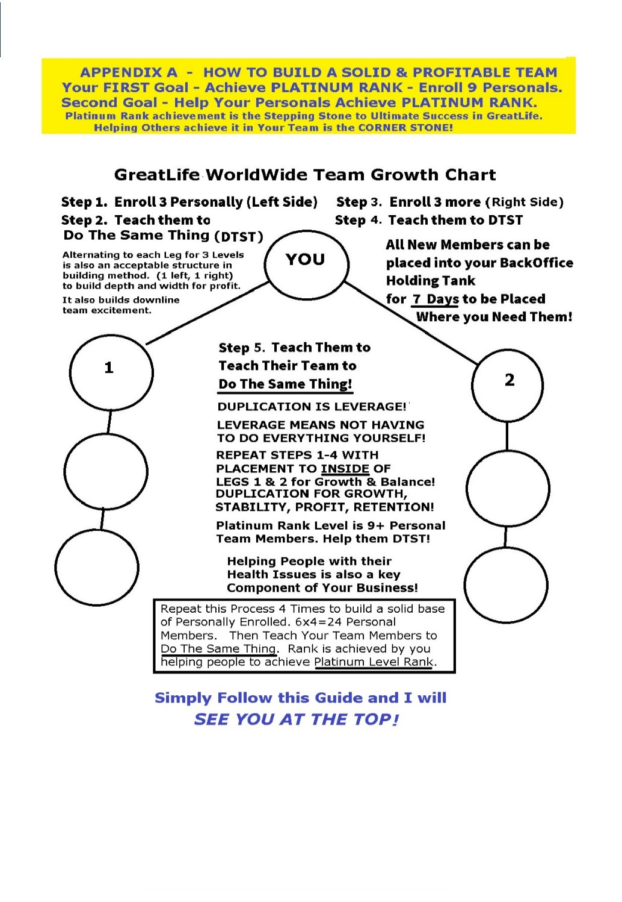

The Art Of Recruiting
and Business Building
A Complete Recruiting, Onboarding,
and Business Building System
Developed exclusively for
GreatLife Worldwide Independent Distributors
Author: A 50+ Year Successful Network Marketing Veteran
Foreword
▲ ContentsRecruiting Scripts and Training System for Independent Distributors
What you are holding — or reading — is the result of more than 50 years of being in this industry. Not observing it from the outside. Living it. Building teams, watching companies rise and fall, learning what works and what only sounds like it works, and carrying the hard lessons forward so that the people who come after me don't have to learn them the same way I did.
I did not build this system to impress anyone. I built it because I believe that GreatLife Worldwide is the most complete, most credible, and most distributor-focused opportunity I have encountered in five decades — and I wanted every person who joins this team to have the tools, the words, and the confidence to share it the way it deserves to be shared.
Let me be direct about what this system is — and what it is not.
It is not a collection of scripts designed to manipulate people into buying something they don't need. Every word in these pages is built on truth — the truth about products that medical professionals use personally, the truth about a compensation plan that has always increased earnings for every distributor when it changed, the truth about an owner with 30 years of network marketing success who built this company for the people in the field, not for a boardroom.
It is a complete recruiting and business-building system — from the first conversation with a cold contact at the gym, through the goal-setting session with a new team member, through the weekly check-in calls, the 30-day content calendar, the closing questions, the objection handlers, and the performance tracking worksheets that keep every distributor moving toward the goal they will not quit for.
Every piece of this system has been tested against real conversations with real people. The scripts that are here work. The objection responses that are here work. The closing questions that are here work. Not because they are clever — because they are honest. And honesty, delivered with confidence. Integrity, and care, is the most persuasive force in any conversation.
If you are new to GreatLife — Welcome. You have joined something genuinely different. Use this system. Follow it. Trust that the words, the sequences, and the timing have been thought through carefully. And when it works — and it will work — teach it to the person who joins your team, exactly the way I am teaching it to you.
If you are an experienced network marketer evaluating GreatLife — read this system the way you read any business plan. With skeptical eyes and specific questions. You will find that the opportunity holds up to both.
If you are a prospect wondering whether this is for you — know that this system was not built by someone with a financial interest in telling you what you want to hear. It was built by someone with 50 years of experience, a triple bypass in 2015, and a personal commitment to sharing only what is real.
And if you are already on this team — know this: your Real Goal is worth building toward. The slow weeks are part of the journey. The unanswered calls are part of the journey. The moment someone says yes for the first time is part of the journey. This system exists to walk alongside you through all of it.
One final thought — the most important thing in this entire document is not a script. It is not a closing question. It is not a social media post or a follow-up sequence.
It is the sentence your new team member writes on their goal sheet. The one they said out loud for the first time. The one that made their voice change.
That sentence is why we do this work.
Everything else in these pages is just the path to it.
With 50 years of experience and a genuine belief in what GreatLife Worldwide represents —
To my team, to every distributor who finds these pages, to every prospect who is still deciding, and to every person whose Real Goal is still waiting:
Let's get to work. Let’s start building Your Dream Business together!
A Successful 50+ Year Network Marketing Veteran
Section 1Onboarding and Initial Training — 30-Day System
▲ ContentsTwo parallel tracks — Product Track and Builder Track. Identify which one your new member is on in the first conversation. Goal setting happens FIRST — before track identification, before resource assignment, before the first contact. Clearly establish their purpose for joining.
Step 0 — Goal Setting First (See Sections 2 and 3)
"Before track identification. Before resources. Before contacts. Find their Real Goal. That goal is what they will not quit for." Also Suggest a 3-Product Monthly Product Autoship to help them Maximize their earnings, and not lose earned commissions.
Step 1 — The Welcome Call (Within 24 Hours of Signing Up)
"[Name], welcome to GreatLife — and welcome to our team. I want to make the next 30 days as clear and simple as possible for you, so let me ask you one question first: when you think about why you joined — is it more about the products and your health, or more about building an income? Because the answer to that shapes everything we do from here."
The Complete GreatLife Resource Map
Company Onboarding Course by the Director of Marketing – Lauren Jackson.
Your Distributor WELCOME Training course is your First Step located in your Back Office in the Digital Library option. It provides courses that you can work at your own pace.. COO, David Knapp, does a video tour of the back office. Learn and Use the back office to help you build business, and teach others. Intro videos · First steps · Product training · Business building tips · Team building guidance. Primary resource for all new members. Complete in the first week at your pace, it is important to get to Know Your Business as quickly as possible.
2. Member Resource Library — Free to All Members Contains eBooks · Audio training · Video library. Available at your own pace. The best distributors return to this library consistently throughout their career. Leaders never quit learning! Note: Before starting you start business building. I highly suggest you ensure you are on a 3-Product monthly Autoship to ensure you do not miss any earnings potential.
3. Qualified Lead Source and Prospecting Training Videos and eBooks. Eliminates 'I'm out of people to talk to — or I don’t know who to talk to. A 28 Year Lead Source company that provides qualified leads of people seeking extra income, plus training videos on how to contact the leads, and what to say.
4. We Build Your Downline System The GreatLife Done-For-You Co-Op System that does all the Recruiting-Follow Up ·Closing done by trained company support staff. For shy recruiters, busy professionals, or anyone who wants to accelerate growth. The single most powerful tool for removing the biggest barrier in network marketing. Fear of that heavy 800 pound Telephone when going to contact prospects.
5. This Recruiting Script System
All scripts, objection handlers, closing questions, social media posts, follow-up sequences, and performance tracking worksheets. Worksheets can be printed as needed to Teach new team members how to use it from Week 1.
30-Day Weekly Schedule
Week 1 — Foundation Week (Days 1–7)
Day 1–2: Start onboarding course · Begin products · Write contact list or – Order Leads system. Day 3: Check-in call with sponsor — 15 minutes· Identify top 10 names to share your business. Day 4–5: Complete product training Day 6–7: Make first contacts · Report back on reactions. Schedule 5-10 contact calls daily, Follow Ups.
Note: The Day 3 call is the most important call in the entire 30 days. New distributors who don't hear from their sponsor in the first 72 hours lose momentum fast. Never skip it.
Week 2 — First Results Week (Days 8–14)
Day 8–9: Contiuue onboarding course · Begin resource library · Follow up on Week 1 contacts Day 10: Small group call or one-on-one — review first conversations Day 11–12: Make 3 more contacts · Share first product experience if applicable Day 13–14: Introduce We Build Your Downline system · Review lead source training
Note: Introduce We Build Your Downline in Week 2 — not Week 1. By then they've tried recruiting themselves and know if it feels natural.
Week 3 — Momentum Week (Days 15–21)
Day 15–16: Follow up on all open conversations from Weeks 1–2 Day 17: One-on-one call — celebrate and praise wins, address stuck points Day 18–19: Begin social media activity using the 30-day content calendar, if Social Media is desired. Day 20–21: Make 5-10 new contacts, using scripts from this system or training, from leads list..
Note: 'You're right in that window' — naming thenormal Week 3 dipnormalizes it and keeps people from quitting at the exact moment they're closest to their first breakthrough.
Week 4 — System Week (Days 22–30)
Day 22–23: Review all resources used · Complete remaining library training Day 24: One-on-one 30-day review call — celebrate milestones, set Month 2 goals Day 25–27: Establish daily method — 3-10 contacts, follow-ups, 1 social content per week Day 28–30: Onboard their first team member using this same system
Note: Duplication is the only thing that creates residual income. The moment they onboard their first team member using this system, the residual income model begins.
Introducing We Build Your Downline!
"I want to make sure you know about something GreatLife just introduced — a system called We Build Your Downline. It uses social media advertising designed by recruiting and ad specialists, and then their trained support staff does the contacting and closing for you. If recruiting feels uncomfortable, or you just want to accelerate your growth without doing it all yourself — this system removes every barrier at a very reasonable cost and can save a lot of time in building your team..
Section 2Goal Setting — The Real Goal Conversation
▲ ContentsThis happens BEFORE everything else in onboarding. Before track identification. Before resource assignment. Before the first contact. Without a goal and a date, every action is just activity.
"A goal without a date is just a wish. A date without a goal is just a deadline. We need both — right now — before we do anything else."
Step 1 — The Big Goal Conversation
"Before we talk about products, contacts, or any of the tools available to you — I want to talk about you. Specifically, why you're really here and what you're really after.
If GreatLife worked exactly the way you hoped — if everything went right — what would your life look like in 3 years? What would be different?"
Note: Let them answer without interrupting. The first answer is often the polite one. The real goal usually comes in the second or third sentence — when they stop editing themselves.
Step 2 — Lock In the Date
"Now I need a date. Not 'someday' and not 'as soon as possible.' A specific date — month and year — when you want to have achieved this goal. It can be aggressive. It can be ambitious. But it has to be real enough that missing it would actually matter to you.
What's the date?"
Step 3 — The Breakdown Framework
Work backwards — always. From the Big Goal to the weekly action.
Big Goal: The dream — specific and vivid. Written in present tense as if already achieved.
Describe it in Detail. Size, Color, Style. If a home, what model, acreage, lake front, urban
Or suburban, pool, Squar Footage, Number of Garages, Location? Education, Retirement, etc.,
3-Year Target: For lifetime goals. Where do you need to be in 3 years to be on track?
Yearly Target: What does success look like at the end of each of the next 12 months?
Quarterly Target: What needs to happen in the next 90 days to stay on track for the year?
Monthly Target: Specific income, customer or team numbers for this month.
Weekly Target: How many contacts, conversations, and follow-ups per week to hit the monthly number.
The REAL GOAL — The One They Will Not Quit For
"The Real Goal is the one they will not quit the business for. It is not a number. It is not a date. It is their journey — and their reward. Everything we do in this business is in service of that goal."
What to Say When They Find Their Real Goal
"I want you to hear what you just said — because that is the most important thing you will say in this entire conversation.
[Repeat their exact words back to them.]
That is your real goal. Not the income number. Not the rank. That.
That is the goal you will not quit for. The weeks when nothing seems to be working, when the contacts aren't returning your calls, when you wonder if this is worth it — that sentence is what gets you back on the phone the next morning.
I'm going to write it down right now on your goal sheet — in your exact words. And I want you to put it somewhere you see it every single day."
Note: Take their goal seriously — more seriously than they expected anyone to. That act of recognition builds loyalty that no commission check can create.
The Weekly Check-In When They're Struggling
"I want to remind you of something you said on the day we started. You said [their exact words — their Real Goal]. That hasn't changed. The slow week hasn't changed it. The unanswered calls haven't changed it.
So let me ask you — have you decided to stop? ... Good. Then let's figure out what's getting in the way this week and remove it. Because that goal is still waiting for you."
The 4 Rules of Goal Setting in Onboarding
Big goal first — always. Never start with the weekly target. Start with the dream.
Specific beats inspiring every time. Push for specifics until you have a number and a date.
The date is not negotiable. A goal without a date is a wish. Hold the line — gently, respectfully, but firmly.
Your commitment is part of the goal. When you sign that worksheet, you are telling them their goal matters to you.
A 50 Year Successful Network Marketing Veteran
Section 3Restate and Dig Deeper — Goal Discovery Technique
▲ ContentsAfter each goal answer — restate what they said in their exact words, then ask: 'Is there anything else — or anything more important to you than [what they just mentioned]?' Repeat until they say 'That's it — that's the real reason.'
"Restate what they said. Then ask: Is there anything more important to you than [what they just mentioned]? Repeat until they say: 'That's it — that's the real reason.”
The Full 3-Round Technique — Word for Word
Opening:"If GreatLife worked exactly the way you hoped — what would your life look like? What would be different?"
ROUND 1: They say:"I want to earn some extra money every month." Restate:"So what I'm hearing is that earning extra monthly income is important to you — is that right?" Dig:"Is there anything else — or anything more important to you than the extra monthly income?"
ROUND 2: They say:"Well — honestly I'd love to be able to stop working weekends." Restate:"So getting your weekends back — time with your family — that's actually more important than the income number itself. Is that right?" Dig:"Is there anything else — or anything even more important to you than getting your weekends back?"
ROUND 3: They say:"Honestly... I just don't want to be worried about money when my kids need something. I want to be the parent who can say yes." Restate:"So what this is really about — underneath the income and the weekends — is being the parent who never has to say no because of money. Is that right?" Dig:"Is there anything more important to you than that?" They say: "No. That's it. That's the real reason." You say:"Good. That's what we're building toward. Write that down — exactly those words."
Note: When they say 'That's it — that's the real reason' — you have found the goal worth building a business around.
5 Common Goal Exchanges
Pay Off Debt
They say: 'Pay off my debt.' Restate: 'Eliminating that financial pressure — is that right?' Dig: 'Is there anything more important than paying off the debt?' They say: 'Just the feeling of not owing anyone anything.' Restate: 'So it's really about financial freedom — not having anyone have a claim on your income.' Dig: 'Is there anything more important than that feeling?' They say: “No — that's it.” You: 'Perfect. That's the goal. Now let's give it a date and a number.' Writing the Date of Achievement and Amount set it in their mind.
Replace Income / Leave Job
They say: 'I want to replace my income so I can leave my job.' Restate: 'Leaving your current job is the target — is that right?' Dig: 'Is there anything more important than leaving the job?' They say: 'I want to work for myself. On my own terms.' Restate: 'It's really about autonomy — being in charge of your own time and decisions.' They say: 'No — that's exactly it.' You: 'Then that's what we're building. What date do you want that autonomy?'
Retirement / Legacy
They say: 'I want to build something for retirement.' Dig until: 'I want to leave something for my kids. Something they can build on.' Restate: 'This isn't just about your retirement — it's about building a legacy your children inherit.' You: 'Then this is a 3-year goal and beyond. Let's map it out that way.'
Health Goal
They say: 'I want to feel better and have more energy.' Dig until: 'I want to be around for my grandkids. I want to be healthy enough to be present.' Restate: 'This is really about being the grandparent who shows up — who has the energy to be there.' You: 'Then that's your why. And that why is going on the goal sheet — in those exact words.'
Professional Income Replacement
They say: 'I want to earn what I earn professionally but part-time.' Dig until: 'I want to stop trading time for money. I want income that keeps coming whether I work that month or not.' Restate: 'It's really about residual income — doing the work once and getting paid on all reorders throughout your team every month.' You: 'Good — because that's exactly what GreatLife's compensation plan is designed to do. Let's give it a date.'
The 4 Rules of the Restate and Dig Technique
Always restate before you dig. Never skip the restate — it builds the trust that makes the deeper answer possible.
Use their exact words in the restate. Their words carry their emotional weight. Yours don't.
Ask until they say 'that's it.' Two rounds is usually not enough. Three is usually the sweet spot.
But, do not hesitate to restate and ask again.. is there anything else beyond that goal?
Write the final answer in their exact words on the goal sheet. Not a summary. Their exact words.
Section 4Goal Tracking Worksheets — Complete System
▲ ContentsPrint one complete set per new distributor. Complete Sheet 1 and Sheet 2 in the first personal training session. Sheet 3 weekly. Sheets 4, 5, and 6 at month, quarter, and year end.
Worksheet Guide — What to Fill Out, and When
Real Goal Discovery Worksheet — One-time, in the first personal training session. Uncovers the real reason a new distributor joined.
Goal Planning & Breakdown Worksheet — One-time, right after the Real Goal Discovery session. Breaks the big goal into 3-year, yearly, quarterly, monthly, and weekly targets.
Weekly Activity Tracker — Every week. Covers the Daily Contact Log, Weekly Results Summary, and Sponsor Check-In together as one weekly ritual.
Monthly Review Worksheet — End of each month.
Quarterly Review Worksheet — End of each quarter.
Yearly Review Worksheet — End of each year — also used to set targets for the year ahead.
New distributors will lean on this guide the most in the first few weeks. Once the rhythm sets in, most reps skip straight to the worksheet they need.
Also available as a standalone printable: GreatLife Goal Tracking Worksheets.docx
GreatLife Worldwide
REAL GOAL DISCOVERY WORKSHEET
First Personal Training Session | Complete Before All Other Goal Setting
"The Real Goal is the one they will not quit the business for. It is their journey — and their reward."
| Member Name: ___________________________ | Start Date: ___________________________ | Sponsor: ___________________________ |
|---|
STEP 1 — IDENTIFY THEIR PRIMARY TRACK
| ☐ PRODUCT TRACK — Personal results first, then sharing | ☐ BUILDER TRACK — Team building and income from day one |
|---|
STEP 2 — THE REAL GOAL CONVERSATION
Use the Restate and Dig Deeper technique. Ask "Is there anything more important than [what they said]?" until they say"That's it — that's the real reason."
| ROUND 1 — Their first answer: |
|---|
| ROUND 2 — After first dig deeper: |
| ROUND 3 — After second dig deeper, until they Say “That’s It”: |
| THE REAL GOAL — When they say 'That's it, that's the real reason': |
MY REAL GOAL — THE ONE I WILL NOT QUIT FOR
| Written in their EXACT words — do not paraphrase or improve: |
|---|
| Why this goal matters more than any obstacle or slow week: |
| Sponsor Signature and Date: _____________________________ | Member Signature and Date: _____________________________ |
|---|
GreatLife Worldwide GOAL PLANNING and BREAKDOWN WORKSHEET
Complete in First Personal Training Session | Review at Every Check-In
| Member Name: ___________________________ | Goal Start Date: _____________________ | Target Achievement Date: ___________________ | |
|---|---|---|---|
| BIG GOAL DESCRIPTION - | |||
| TARGET DATE | |||
| WHAT IS REQUIRED — Activity, Time, Resources | |||
| CALLS REQUIRED / WEEK | Leads Required: _______ Contacts Per Week: _______ Presentations Per Week: _______ Enrollments: _____ | ||
| SUCCESS LOOKS LIKE | |||
| NOTES / OBSTACLES TO PLAN FOR | |||
3-YEAR TARGET
| GOAL DESCRIPTION | |
|---|---|
| TARGET DATE | |
| WHAT IS REQUIRED — Activity, Time, Resources | |
| CALLS REQUIRED / WEEK | Leads Required: _______ Contacts Per Week: _______ Presentations Per Week: _______ Enrollments: _____ |
| SUCCESS LOOKS LIKE | |
| NOTES / OBSTACLES TO PLAN FOR |
YEARLY TARGET — Year 1
| GOAL DESCRIPTION | |
|---|---|
| TARGET DATE | |
| WHAT IS REQUIRED — Activity, Time, Resources | |
| CALLS REQUIRED / WEEK | Leads Required: _______ Contacts Per Week: _______ Presentations Per Week: _______ |
| SUCCESS LOOKS LIKE | |
| NOTES / OBSTACLES TO PLAN FOR |
QUARTERLY TARGET — Q1
| GOAL DESCRIPTION | |
|---|---|
| TARGET DATE | |
| WHAT IS REQUIRED — Activity, Time, Resources | |
| CALLS REQUIRED / WEEK | Leads Required: _______ Contacts Per Week: _______ Presentations Per Week: _______ Enrollments: _____ |
| SUCCESS LOOKS LIKE | |
| NOTES / OBSTACLES TO PLAN FOR |
MONTHLY TARGET — Month 1
| GOAL DESCRIPTION | |
|---|---|
| TARGET DATE | |
| WHAT IS REQUIRED — Activity, Time, Resources | |
| CALLS REQUIRED / WEEK | Leads Required: _______ Contacts Per Week: _______ Presentations Per Week: _______ Enrollments: _____ |
| SUCCESS LOOKS LIKE | |
| NOTES / OBSTACLES TO PLAN FOR |
WEEKLY TARGET — Week 1
| GOAL DESCRIPTION | |
|---|---|
| TARGET DATE | |
| WHAT IS REQUIRED — Activity, Time, Resources | |
| CALLS REQUIRED / WEEK | Leads Required: _______ Contacts Per Week: _______ Presentations Per Week: _______ Enrollments: ____ |
| SUCCESS LOOKS LIKE | |
| NOTES / OBSTACLES TO PLAN FOR |
GreatLife Worldwide
WEEKLY ACTIVITY and RESULTS TRACKER
Complete Each Week — Bring to Weekly Check-In Call with Sponsor
| Member Name: ___________________ | Week #: _______ Month: ________ | Weekly Goal (from Goal Sheet): ______________ | Sponsor Check-In Date: _________________ |
|---|
THIS WEEK'S TARGETS
| Contacts Target: _______ | Presentations Target: _______ | Follow-Ups Target: _______ | New Customers / Team Members Target: _______ |
|---|
DAILY CONTACT LOG
Record every contact made this week — prospects, follow-ups, and presentations.
| # | Name | Date and Time | Type(New/Follow-Up/Pres.) | Result / Response | Notes | Follow-Up Date |
|---|---|---|---|---|---|---|
| 1 | ||||||
| 2 | ||||||
| 3 | ||||||
| 4 | ||||||
| 5 | ||||||
| 6 | ||||||
| 7 | ||||||
| 8 | ||||||
| 9 | ||||||
| 10 | ||||||
| 11 | ||||||
| 12 | ||||||
| 13 | ||||||
| 14 | ||||||
| 15 |
Notes:
WEEKLY RESULTS SUMMARY
| Total Contacts Made: | Total Presentations: | Total Follow-Ups: | New Customers This Week: |
|---|---|---|---|
| New Team Members This Week: | Reorders Received: | Video Links Sent: | We Build Downline — Referrals: |
| Weekly Target — HIT ☐ MISSED ☐ | What Worked Well: | What Got in the Way: | Adjusted Plan for Next Week: |
WEEKLY SPONSOR CHECK-IN NOTES
| Q1: What was your weekly target and did you hit it? |
|---|
| Q2: What got in the way — if anything? |
| Q3: What is your target for next week and what do you need from your sponsor to hit it? |
MONTHLY REVIEW WORKSHEET
Complete at End of Each Month — Review with Sponsor
| Member Name: ___________________ | Month:___________ Year: _______ | Monthly Goal (from Goal Sheet): ______________ | Review Date with Sponsor: _________________ |
|---|
MONTHLY ACTIVITY TOTALS
| Total Contacts This Month: | Total Presentations: | Total Follow-Ups: | Videos Sent: |
|---|---|---|---|
| New Customers: | New Team Members: | Total Reorders: | We Build Downline: Results: ____________ |
MONTHLY GOAL ACHIEVEMENT STATUS
| Monthly Goal: | |
|---|---|
| Result Achieved: | |
| Goal Status: | ☐ Achieved ☐ Partially Achieved ☐ Not Achieved — Reason: |
| What Worked Best This Month: | |
| What to Do Differently Next Month: |
REAL GOAL CHECK — MONTHLY REMINDER
| My Real Goal (copy from Goal Sheet — exact words): |
|---|
| Am I still on track toward my Real Goal? ☐ Yes — keep going ☐ Need to adjust — what needs to change: |
NEXT MONTH TARGETS
| Contacts Target: _______ | New Customers Target: _______ | New Team Members Target: _______ | Income Target: $_______ |
|---|
QUARTERLY REVIEW WORKSHEET
Complete at End of Each Quarter — Deep Review with Sponsor
| Member Name: ___________________ | Quarter: ☐ Q1 ☐ Q2 ☐ Q3 ☐ Q4 Year: _______ | Quarterly Goal (from Goal Sheet): ______________ | Review Date with Sponsor: _________________ |
|---|
QUARTERLY TOTALS
| Total Contacts: | Total Presentations: | Total New Customers: | Total New Team Members: |
|---|---|---|---|
| Total Reorders: | Estimated Monthly Income Now: | We Build Downline — Total Results: | Total Team Size: |
QUARTERLY GOAL ACHIEVEMENT REVIEW
| Quarterly Goal: | |
|---|---|
| Result Achieved: | |
| Goal Status: | ☐ Achieved ☐ Partially Achieved ☐ Not Achieved — Reason: |
| Biggest Win This Quarter: | |
| Biggest Challenge This Quarter: | |
| What I Will Do Differently Next Quarter: |
REAL GOAL CHECK — QUARTERLY ALIGNMENT
| My Real Goal (copy from Goal Sheet — exact words): |
|---|
| Has my Real Goal changed or deepened this quarter? If so, how? |
| On a scale of 1–10, how connected do I feel to my Real Goal right now? Score: _______ What would make it a 10? |
NEXT QUARTER TARGETS
| New Customers Target: _______ | New Team Members Target: _______ | Monthly Income Target: $_______ | Team Size Target: _______ |
|---|
YEARLY REVIEW WORKSHEET
Complete at End of Each Year — Full Business Review with Sponsor
| Member Name: ___________________ | Year: ___________ | Yearly Goal (from Goal Sheet): ______________ | Review Date with Sponsor: _________________ |
|---|
YEARLY TOTALS and BUSINESS SNAPSHOT
| Total Contacts Made: | Total Presentations: | Total New Customers: | Total New Team Members: |
|---|---|---|---|
| Total Reorders: | Total Team Size (End of Year): | Monthly Residual Income (Now): | We Build Downline — Total Results: |
| Year 1 Income Goal: | Actual Income Achieved: | Goal Achievement %: | Rank / Level Achieved: |
YEARLY GOAL ACHIEVEMENT REVIEW
| Yearly Goal: | |
|---|---|
| Result Achieved: | |
| Goal Status: | ☐ Achieved ☐ Partially Achieved ☐ Not Achieved — Reason: |
| Single Biggest Win This Year: | |
| Single Biggest Challenge This Year: | |
| Most Important Lesson Learned: | |
| What I Commit to Doing Differently in Year 2: |
REAL GOAL CHECK — YEARLY ALIGNMENT
| My Real Goal — The One I Will Not Quit For (copy from Goal Sheet — exact words): |
|---|
| How much closer am I to my Real Goal than I was 12 months ago? |
| Has my Real Goal evolved or deepened this year? If so, write the updated version below: |
YEAR 2 TARGETS — SET NOW WHILE THE LESSONS ARE FRESH
| Year 2 Income Goal: $__________ | Team Size Target: __________ | New Customers Target: __________ | New Team Members Target: __________ |
|---|---|---|---|
| Q1 Milestone: | Q2 Milestone: | Q3 Milestone: | Q4 Milestone: |
| Sponsor Signature and Date: _____________________________ | Member Signature and Date: _____________________________ |
|---|
Section 5Health Seeker Scripts
▲ ContentsWarm contacts, cold contacts, social media, and referrals. Lead with curiosity — never with the product or the opportunity. The medical credibility angle appears naturally, not as a pitch.
Warm Contact — In Person or Phone
Opening Line
"Hey [Name], can I ask you something? Have you been happy with your energy and how you've been feeling lately — or is that something you'd want to be better?"
If They Say 'Not Really' or 'Could Be Better'
"I thought so — honestly, same for a lot of people I talk to. I've been working with a company whose products I've personally felt make a real difference. What makes them stand out is that the products are science-based and all-natural, affordable, and they're actually endorsed and used by medical doctors. Not just recommended — doctors are using them with their own patients. Would you be open to taking a look, no pressure at all?"
Note: Pause after 'would you be open to taking a look' — don't fill the silence. Let them answer.
Cold Contact — Meeting Someone New
Opening (After Small Talk)
"So what do you do to take care of your health? Are you big into nutrition, or is that not really on your radar?"
After They Respond — Pivot
"That's interesting. I ask because I've been introduced to something that I think is genuinely different — a line of natural nutritional products that have been clinically developed and that medical professionals are actually prescribing and using themselves. I'm always curious if people are open to things like that, or if health and wellness is even a priority. Is it for you?"
Note: The question at the end qualifies them without pressure — it lets them self-select in or out.
Social Media — DM or Comment Reply
Opening DM (After They Post About Health, Fatigue, or Wellness)
"Hey [Name] — saw your post and it really resonated. A lot of people I know have dealt with the same thing. I've been working with a company that produces science-based, natural nutritional products — the kind that actual doctors endorse and recommend to patients. I'd love to share more if you're curious. No pitch, just a conversation. Would that be okay?"
Follow-Up If No Reply After 3–4 Days
"Just wanted to circle back — totally no worries if the timing isn't right. I'll just leave this here: the thing that sets these products apart for me is the medical community backing them. Doctors don't put their name on things they don't believe in. If you ever want to know more, I'm happy to share."
Note: The follow-up doesn't ask again — it just re-anchors the credibility. That's what gets replies.
Referral — Asking a Satisfied Customer to Refer
After a Customer Shares Positive Results
"I'm so glad you're feeling that difference — that's exactly why I love sharing these products. Can I ask a favor? Who do you know — a friend, family member, coworker — who has been struggling with [energy / joint pain / weight / whatever applies]? I'd love to reach out to them the same way I did with you. Would you be comfortable making an introduction?"
Note: Referrals convert at 3–5x the rate of cold contacts. Use this every time someone gets a result.
Section 6Gym and Health Food Store Scripts
▲ ContentsPeople in these environments are already self-selected as health-conscious. Your qualifying question practically answers itself. Never do a full presentation on the spot — get the contact and move the conversation somewhere you control.
At the Gym — Striking Up a Conversation
Natural Opener
"You've clearly been at this a while — do you just train, or do you do much on the nutrition side too?"
Note: This compliment + question combo is disarming. It's not about you yet — let them talk first.
After They Respond — Build Rapport, Then Pivot
"That's interesting — I ask because I've been working with a company that produces science-based nutritional products. The reason I got involved is because these aren't your typical supplements — they're developed with physician input and medical doctors are actually recommending and using them with their own patients. That was the thing that got my attention."
The Qualifying Question
"Is that something you'd be open to hearing a little more about — or is nutrition pretty locked in for you right now?"
Note: Giving them the easy out actually increases yes responses. People lean in when they don't feel cornered.
If They Say Yes — Get the Contact, Don't Pitch on the Spot
"I don't want to keep you from your workout — could I get your number and send you a short video that explains it better than I can standing here? Takes about 10 minutes to watch and then you can tell me what you think."
At a Health Food Store — In the Supplement Aisle
Situational Opener
"That's a popular one — are you finding what you're looking for or still figuring out what actually works?"
If They Express Uncertainty or Frustration
"Honestly, I felt the same way for a long time. The reason I landed where I did is because I found products developed with clinical research behind them, and that medical professionals are using themselves. That was the bar I needed before I'd trust something. Are you at all open to hearing what that looks like?"
If They Ask 'What Company Is It?' Right Away
"It's called GreatLife Worldwide — but honestly the name means less than the story behind the products. The more interesting thing is how they're developed and who's recommending them. Would a short video work, or would you rather grab a coffee and I can walk you through it?"
Note: Don't let them Google the name in the moment. Redirect to the story — that's where your advantage lives.
The 3 Rules for Cold Contact in Health Settings
Ask before you tell. One genuine question about them before you say a single word about GreatLife.
Get the contact, not the close. Your only goal is to earn the right to a real conversation later.
The medical angle is your exit from 'just another supplement.' Use it every time.
Section 7Objection Handling
▲ ContentsBoth objections signal buying interest, not rejection. A health-conscious person who already takes supplements or works with a doctor is your ideal prospect. Your job is not to win the objection — it is to earn the next conversation.
Objection: 'I Already Take Supplements'
Step 1 — Validate, Don't Argue
"That's great — honestly, it tells me you already care about your health, which means you get it. Most people I talk to who are already taking something just want to make sure what they're taking is actually working."
Step 2 — Introduce the Differentiator
"Here's what I'd ask you to consider. Most supplements on the market are retail-grade. What I'm working with is different: these products are science-based, backed by clinical research, and being recommended and used by medical doctors — not just endorsed on a label, but actually prescribed and taken by physicians themselves."
Step 3 — The Bioavailability Question
"Can I ask — how do you know what you're currently taking is actually absorbing? Because bioavailability and efficacy really come down to one question — does it actually work? Not does it look good on the label — but does your body absorb it and use it the way it's supposed to?"
Step 4 — Low-Commitment Next Step
"I'm not asking you to replace anything right now. Would you be open to a quick 15-minute call — or just watching a short video — so you can compare and decide for yourself?"
Objection: 'I'm Already Working with My Doctor'
Step 1 — Affirm Strongly
"That's honestly one of the best things I can hear — that you have a doctor you trust and you're being proactive. That's exactly the kind of person these products are designed for."
Step 2 — Flip the Frame
"Here's what's interesting — the reason I'm so confident in what I share is because it's not coming from me, it's coming from the medical community. These products are being recommended by doctors who have looked at the research and decided to use them with their own patients."
Step 3 — Plant a Seed
"It might actually be worth asking your doctor if they're familiar with science-based nutritional supplementation as part of your care plan. And if they're not familiar with what I'm sharing, I'd love to give you something you could bring to them."
Step 4 — Low-Pressure Close
"Would it be okay if I sent you some information — just the product science overview — that you could review on your own time, or even share with your doctor if you felt it was worth it?"
The Golden Rule for Both Objections
"Never try to win the objection — try to earn the next conversation."
Note: Your calm confidence in the face of these objections is itself a form of credibility. Most distributors flinch. You don't have to.
Section 8Gym Contact Follow-Up Sequence
▲ ContentsAfter getting a contact's number at the gym or health food store. Video link already sent. Six touch points over 14 days. Every contact has a purpose — never follow up with nothing attached.
Step 1 — Same Day (Within 2 Hours) — Text
"Hey [Name] — great meeting you today. This is [Your Name]. I'm sending over that short video I mentioned. Takes about 10 minutes — especially note the part about the physician involvement. Here's the link: [link]. Looking forward to hearing what you think."
Note: Strike while the conversation is fresh. Same-day contact has dramatically higher open rates.
Step 2 — Day 2 Morning — Text
"Hey [Name] — just checking in. Did you get a chance to watch the video? No worries if not — just wanted to make sure it came through okay. Happy to answer any questions whenever you're ready."
Note: This text has one job: re-surface your name without pressure.
Step 3 — Day 3 or 4 — Phone Call
"Hey [Name], it's [Your Name] — we met the other day. I know you're busy so I'll keep this short. Did you get a chance to watch the video I sent?
[If YES] — Great, what was the part that interested you most? I'd love to answer any questions and expand on whatever caught your attention.
[If NO] — No worries at all — when would you have a free 10–15 minutes to watch it? That way I can be available right after to answer any questions you have or go deeper on whatever interests you most. Does that sound ok with you?"
Note: If they haven't watched yet, schedule a specific watch time. 'Does that sound ok with you?' is collaborative, not pushy.
Step 4 — Day 7 — Value Text (No Ask)
"Hey [Name] — thought of you when I saw this. One of the physicians who works with our products shared a quick insight about [recovery / inflammation / energy]. Worth a read: [link]. Hope the training's going well."
Note: Zero ask. Pure value. Reminds them you exist without feeling like a follow-up.
Step 5 — Day 10–14 — The Honest Close
"Hey [Name] — I don't want to keep bugging you, so I'll be straight: I think what I shared is genuinely worth a closer look, and I'd love to spend 15 minutes walking you through it on a call. If the timing just isn't right, no hard feelings at all — just let me know and I'll leave you alone. But if you're even a little curious, I promise it's worth 15 minutes. What do you think?"
Note: The honest close gives them full permission to say no — which paradoxically makes people more likely to say yes.
Step 6 — The Breakup Text (If No Response After Day 14)
"Hey [Name] — I'll take your silence as a 'not right now' and I totally respect that. I'm going to step back and not keep reaching out. If anything ever changes — whether it's the health side or the business side — I'm easy to find. Take care and keep crushing it in there."
Note: This text gets more replies than almost any other in the sequence. Telling someone you're walking away triggers a response in people who were just busy or distracted.
A Successful 50+ Year Network Marketing Veteran| Recruiting Script for Health Care
Section 9Medical Professional Recruiting Playbook
▲ ContentsTwo tracks — always start with Track 1. Track 1: Product Advocate — they recommend and use GreatLife products. Track 2: Distributor/Partner — only after Track 1 is established and they are genuine believers.
Rule #1 — Never Lead with the Business Opportunity
Physicians are trained skeptics. The moment they sense an MLM pitch, the conversation is over. Your only goal in the first contact is to position yourself as someone bringing them clinically relevant information their patients are asking about.
Note: 'Your patients are asking' is the most powerful frame you can use with any medical professional.
The Universal Medical Professional Opener
In Person — Any Healthcare Setting
"[Dr./Name], I appreciate a moment of your time. I work with a company that produces science-based, clinically developed nutritional products — and more and more patients are asking their healthcare providers about this category. I just want to make sure you're informed when those conversations happen. Would it be okay to leave you a brief overview?"
Scripts by Healthcare Specialty
Cardiologists
"I wanted to make sure you're aware of Clear Heart — a product in the GreatLife line designed specifically for heart and vascular health. Cardiologists nationwide have been seeing significant results in patients using it — significant enough that a number of them have started using it personally. I'd love to share the clinical overview and get your professional reaction."
→ Would you be open to reviewing the science behind it?
Internal Medicine / Primary Care Physicians
"You see more patients asking about natural supplementation than almost any other specialty. What I'm bringing you isn't a retail product — it's a clinically developed, science-based nutritional line that medical professionals are using personally and recommending to patients."
→ Would 10 minutes to walk through the clinical background be worth your time?
Nurse Practitioners and Physician Assistants
"You're often the first conversation a patient has about their health. The products I work with are science-based, physician-developed, and clinically endorsed. I'd love to share them with you so that when a patient asks your recommendation, you have something you can stand behind."
→ Is that a conversation worth having?
Pharmacists
"Patients ask you about supplements more than almost anyone. What I'm sharing is different from retail supplements — these are clinically formulated with physician involvement, developed with bioavailability and efficacy as the primary design criteria. I think you'd find the formulation approach interesting."
→ Would you be open to looking at the ingredient science?
Chiropractors, Naturopaths and Integrative Medicine
"You already understand that nutrition is foundational to health. The products I work with were developed with that same philosophy — science-based, natural, clinically effective. And the physician community has noticed. I'd love to show you what's getting attention and why."
→ Does that sound like something worth 15 minutes of your time?
Your Personal Story — Use It in Every Medical Professional Meeting
"I want to share something personal — in 2015 I had a Triple-Bypass on my left side. That experience is what made me take the clinical evidence behind these products more seriously than I have anything else in 50 years in health and wellness. I'm not sharing this casually. I'm sharing it because I know what it means to have a personal stake in whether something actually works."
Note: Your triple bypass is the single most credible statement you can make in a room full of medical professionals.
The Patient Referral Path — Your Easiest Entry Point
"If your doctor asks what you've been doing differently — feel free to mention the products and give them my name. I'm happy to answer any clinical questions they have. Here's my card."
Note: A physician who calls you is worth ten cold calls. They've already seen a patient result, they're already curious.
Converting a Product Advocate to a Distributor
"I've noticed you've been recommending these products consistently — and your patients are getting results. Can I share something with you that a few other physicians I know have found interesting? Some of them have gotten involved at a deeper level — not just recommending the products but becoming independent distributors. It gives them a way to make the products more accessible to patients and earn income in the process. Would that be worth a conversation?"
Note: 'A deeper level' opens the door to the business without saying the word 'business.' Let them ask what you mean.
Section 10Personal Story Posts
▲ ContentsThree versions of your personal story post, each tuned for a different audience and reading speed. All three include the corrected compensation plan language. Rotate across the month for maximum reach.
Version 1 — The Straight Story (Facebook · LinkedIn)
After 50 years in network marketing, I thought I'd seen everything.
Great products with weak companies. Strong companies with mediocre products. Compensation plans that sounded incredible on paper and disappointed in practice. Owners who were more interested in their own success than their distributors'.
I wasn't looking for anything new.
Then I found GreatLife Worldwide — and I stopped being skeptical.
The products are science-based, safe, natural, and clinically effective — endorsed and personally used by medical professionals. Doctors are using them with their own patients.
The company is privately owned by someone with 30 years of network marketing success — designed around distributor success from day one.
A custom-designed Hybrid Compensation Plan with a Monthly Matrix plus a Coded Bonus compensation that pays to Infinity — both pay on Product Purchases, not volume. One product monthly to earn. Three products monthly is the maximum required to earn at all levels, unlock full compensation, and qualify for every bonus. No ceiling.
Real customer support. Knowledgeable, friendly, reachable within minutes.
After 50 years, I know the difference between a good opportunity and a great one.
This is a great one.
If you're curious why someone with my experience would say that — I'd love to talk. 👇
Version 2 — Short and Punchy (Facebook · Instagram)
50 years in network marketing.
I've seen the hype. The broken promises. The companies that put their interests ahead of their distributors'. The products that couldn't back up their claims.
So when I say GreatLife Worldwide is different — I mean it differently than most people mean it.
Privately owned by a 30-year industry veteran who built this for distributors, not for Wall Street.
Products so credible that medical professionals use them personally and recommend them to their patients.
A custom-designed Hybrid Compensation Plan with a Monthly Matrix plus a Coded Bonus that pays to Infinity on Product Purchases — not volume. Three products monthly maximum to earn at all levels, unlock full compensation, and qualify for every bonus.
Real customer support. Real answers within minutes.
I wasn't looking. But I found something I couldn't walk away from.
If that sounds worth a conversation — my door is open.
Version 3 — The Conversation Starter (Facebook · LinkedIn)
Can I be honest with you for a second?
After 50 years in this industry, I became a very hard person to impress.
I've worked with a lot of companies. Seen a lot of products. Heard a lot of compensation plans explained on whiteboards that looked nothing like the checks people actually received.
With GreatLife Worldwide, I kept waiting to find the catch.
I'm still waiting.
Privately owned by someone with 30 years in network marketing — not a corporate executive, someone who has actually built what we're building, and who designed this company around distributor success from day one.
Products endorsed and personally used by medical professionals. Not just approved — chosen by doctors for themselves and their patients.
A custom-designed Hybrid Compensation Plan with a Monthly Matrix plus a Coded Bonus that pays to Infinity on Product Purchases — not volume. Every product sold counts. Every level. No ceiling.
Real customer support. Real people. Real answers. Within minutes.
After 50 years, the catch is usually obvious pretty quickly.
I've been with GreatLife long enough to know — it's not there.
Drop a 🙋 below if you'd like to know more. I'll reach out personally.
Section 1130-Day Facebook Content Calendar
▲ ContentsPlatform: Facebook | Frequency: 3 posts per week — 13 posts total | Mix: Products, Story, Education, Recruiting, Social Proof
Post types: Personal Story · Education · Product · Recruiting · Social Proof. Each post includes hook, full text, goal, and placement tip.
Day 1 · Monday — PERSONAL STORY
Can I be honest with you for a second? [Version 3 Personal Story Post — See Section 10]
Note: Goal: Establish authority. Let your experience do the qualifying.
Day 3 · Wednesday — EDUCATION
3 things most people get wrong about nutritional supplements:
❌"All supplements are basically the same." The difference between retail-grade and clinically developed formulations is significant — in ingredients, sourcing, and bioavailability.
❌"If it's natural, it's safe." Natural doesn't automatically mean effective or properly dosed. The science matters.
❌"My doctor would tell me if I needed one." Many physicians simply aren't trained in nutritional science. The ones who are tend to be very intentional about what they recommend.
The supplement world is noisy. But the signal is there if you know where to look.
Goal: Build authority as a health educator. No product mention — pure education.
Day 5 · Friday — SOCIAL PROOF
Got a message this week from someone I'd shared some information with a few months back.
She said her doctor had actually commented on her bloodwork at her last checkup and asked what she'd been doing differently. She told him. He got curious.
I love when that happens. No dramatic story. Just someone paying attention to their health, and a doctor noticing the difference.
If you're doing the same — paying attention, asking questions, looking for what actually works — I'd love to connect.
Note: Goal: Let a third-party result speak louder than any pitch could.
Day 8 · Monday — EDUCATION
Most people take supplements based on what the label says.
But here's a question worth asking: How do you know it's actually absorbing?
Because bioavailability and efficacy really come down to one question — does it actually work? Not does it look good on the label — but does your body actually absorb it and use it the way it's supposed to?
Most store-bought supplements are formulated for cost, not absorption. If the bioavailability isn't there, the efficacy isn't there either.
I've been down this rabbit hole lately. Happy to share what I found if you're curious. 👇
Note: Goal: Generate comments and DMs. The question most people can't answer stops the scroll.
Day 10 · Wednesday — PRODUCT (Clear Heart)
There's a big difference between a product that's "celebrity endorsed" and one that medical professionals actually choose for themselves and their patients.
One is a marketing decision. The other is a clinical one.
One of the products in the GreatLife Worldwide line is called Clear Heart — designed specifically for heart and vascular health. When cardiologists across the country started seeing significant results in their patients using it, something remarkable happened.
They didn't just keep recommending it. They started using it themselves.
Cardiologists. The specialists whose entire career is built on understanding the cardiovascular system. Making a personal decision to trust it.
That's not a testimonial. That's a clinical vote of confidence from the most credentialed voices in heart health.
If you or someone you love has ever had a conversation with a cardiologist about long-term heart and vascular health — this is worth knowing about.
Happy to share more. Just drop a comment or send me a message. 👇
Note: Goal: Name the product. The cardiologist detail makes this highly shareable among heart health communities.
Day 12 · Friday — PERSONAL STORY
After 50 years in this industry, I have a short list of questions I ask before I trust any company. Most companies fail at least one.
Here's what I asked about GreatLife Worldwide and the answers I received.
Who owns it? Privately owned. An owner with 30+ years of network marketing success who built this from the inside out, who also had decades of success in other business industries.
Are the products credible? Science-based, natural, clinically developed — endorsed and personally used by medical professionals.
Does the compensation plan actually pay? Custom-designed Hybrid — Monthly Matrix plus Coded Bonus that pays to Infinity on Product Purchases, not volume. Three products monthly maximum purchase to earn at all levels.
What happens when you need help? Real customer support. Knowledgeable, friendly, reachable within minutes.
Every question got the right answer. That doesn't happen often.
If you're evaluating your options in this space — I'm happy to walk you through what I found.
Day 15 · Monday — RECRUITING
Let me be straight with you — GreatLife Worldwide isn't for everyone.
It's not for people looking for a get-rich-quick shortcut. It's not for people who want to sign up and do nothing. And it's not for people who don't care what they put in their body.
But if you're someone who takes your health seriously — and you want products backed by real science and trusted by medical professionals — it might be exactly what you've been looking for.
And if you're someone who wants to build something real — with a Hybrid Compensation Plan that pays to Infinity on Product Purchases and an owner who has 30 years of success in this industry —
That's who I'm looking for. Not everyone. The right people.
If that sounds like you — let's talk.
Goal: Pre-qualify prospects. Disqualifying people attracts better ones.
Day 17 · Wednesday — PRODUCT
For years I picked up supplements the same way most people do — off a shelf, based on a label claim and a price point.
Then I started asking harder questions.
What's the actual bioavailability? Is this ingredient in its most absorbable form? Who developed this — a marketing team or a scientist? Would a physician recommend this?
Most store-bought products couldn't answer those questions well.
What changed my standard was finding products developed with clinical input, backed by real research, and chosen by medical professionals for their own health and their patients'.
That's a completely different category. And once you see the difference, it's hard to go back.
If you're curious what that looks like — I'm happy to share.
Note: Goal: Relates to health seekers already questioning what they're taking.
Day 19 · Friday — SOCIAL PROOF
Someone I know had been doing everything right for years. Eating well. Exercising. Sleeping. Taking supplements.
Still felt like he was running at about 70%.
He started using the products I work with. A few months later at a routine checkup his doctor looked at his numbers and asked what he'd changed.
He hadn't changed much else. Just the products.
I'm not making health claims — I'm just sharing what he told me. And what his doctor noticed.
If 70% feels familiar — and you've been doing everything right — maybe it's worth a conversation.
Happy to share more if you're curious. 👇
Note: Goal: 'Running at about 70%' — almost everyone identifies with this.
Day 22 · Monday — EDUCATION
After 50 years in health and wellness, here's what I look for before I trust any nutritional supplement:
✅ Clinically developed — formulated by scientists, not marketers
✅ Transparent sourcing — you can find out what's in it and where it came from
✅ Bioavailability — formulated to actually absorb, not just pass through
✅ Medical credibility — endorsed and used by physicians, not just approved by them
✅ Consistent quality — same formula, same standard, every batch
✅ Results that hold up — not just a first-week feeling, but sustained improvement
Most products on the market meet two or three of these. Maybe four.
The products I work with check every box.
If you want to know which ones — just ask. Happy to share.
Goal: High shareability. Positions you as a trusted health resource.
Day 24 · Wednesday — RECRUITING
If someone had shown me 50 years ago what a truly distributor-first company looks like — I'd have saved myself a lot of hard lessons.
The owner matters more than the product. A privately owned company run by someone who has actually built a network marketing business changes everything about how decisions get made.
The compensation plan architecture matters more than the percentages. A custom-designed Hybrid — Monthly Matrix plus Coded Bonus — that pays to Infinity on Product Purchases is a fundamentally different thing than one built around volume requirements.
Support isn't a department — it's a culture. When you can reach a knowledgeable, friendly human being within minutes, that's a philosophy.
I found all three with GreatLife Worldwide.
If you're building in this space and something has always felt slightly off — I understand that feeling. And I know what the alternative looks like.
Let's talk.
Note: Goal: Attracts experienced builders and entrepreneurs ready for something better.
Day 26 · Friday — SOCIAL PROOF
The person I thought would never try these products — tried them.
She was skeptical of everything. Had been burned by supplement promises before. Didn't trust the industry.
She agreed to 60 days. Said she'd give it an honest shot and tell me the truth either way.
60 days later she called me.
She didn't gush. She's not that kind of person. She just said:"Something is different. I don't know exactly what. But something is different."
That was enough for her. And honestly — coming from her — it was enough for me too.
The products don't need me to oversell them. They just need the right person to give them an honest shot.
If you're a skeptic — good. So was she. I'm happy to have that conversation.
Goal: Speaks directly to skeptics. Your most resistant prospects are often your best customers.
Day 29 · Monday — PERSONAL STORY
I've had a lot of conversations this month — and a few themes keep coming up.
People are tired of feeling like they should have more energy than they do.
People are frustrated with supplements that promise results and deliver noise.
People want to trust something — a product, a company, a person — and they're having a hard time finding a reason to.
And a surprising number of people are quietly wondering if there's a way to build something of their own — without the hype, without the pressure, without a company that forgets about them the moment they sign up.
I hear all of it. I've felt most of it myself over the years. If any of that sounds familiar — I'm still here, still having the conversation, still happy to share what I found. No deadline. No pressure. Just an open door. Who wants to walk through it? 👇
Goal: Re-engages everyone who watched but didn't comment. Softest possible invitation.
Section 12Clear Heart and Cardiologist Post
▲ ContentsThe updated Day 10 post featuring the Clear Heart product and nationwide cardiologist endorsement. Also includes the short DM reply version and audience notes.
Full Post — Day 10 Facebook
There's a big difference between a product that's "celebrity endorsed" and one that medical professionals actually choose for themselves and their patients.
One is a marketing decision. The other is a clinical one.
One of the products in the GreatLife Worldwide line is called Clear Heart — designed specifically for heart and vascular health. When cardiologists across the country started seeing significant results in their patients using it, something remarkable happened.
They didn't just keep recommending it. They started using it themselves.
Cardiologists. The specialists whose entire career is built on understanding the cardiovascular system. Making a personal decision to trust it.
That's not a testimonial. That's a clinical vote of confidence from the most credentialed voices in heart health.
If you or someone you love has ever had a conversation with a cardiologist about long-term heart and vascular health — this is worth knowing about.
Happy to share more. Just drop a comment or send me a message. 👇
Short Version — For Comment Replies and DMs
Most "physician endorsed" products are exactly that — endorsed. A label claim. A logo.
What stopped me in my tracks with GreatLife Worldwide was different.
Cardiologists nationwide started seeing significant results in patients using Clear Heart — a product designed for heart and vascular health.
And then those same cardiologists started using it themselves.
When heart specialists make that call — that's a different conversation entirely.
If heart health is on your radar — for yourself or someone you care about — I'd love to share more.
Audience Reach — Who This Post Speaks To
Heart health seekers — anyone managing blood pressure, cholesterol, or cardiovascular risk. Tag-a-friend energy is high with this post.
Medical professional prospects — cardiologists and internists who see this may reach out.
Family caregivers — people whose parents or spouses have heart concerns share posts like this at a very high rate.
Experienced NM recruiters — a product with cardiologist adoption is a recruiting story that stands alone.
A 50 Year Successful Network Marketing Veteran| Recruiting Script for Health Care
Section 13Clear Heart — 3 Facebook Posts
▲ ContentsThree approaches to Clear Heart — awareness, personal story with triple bypass, and engagement question. Use one per week across weeks 2, 3, and 4.
Post 1 — The Heart Conversation Nobody Is Having
Angle: AwarenessandEducation. Best used: Week 2.
Here's something I wish more people talked about.
Heart disease is still the number one cause of death in the United States. Most people know that. What most people don't know is how much of that risk is addressable through nutrition — not just medication, not just exercise, but the specific nutrients that support heart and vascular function at a cellular level.
Which is why it caught my attention when cardiologists across the country started taking notice of a product called Clear Heart — designed specifically for heart and vascular health — and not just recommending it to patients, but choosing it for themselves.
I'm not a cardiologist. But when the people who spend their careers studying the heart make a personal choice about what supports theirs — I pay attention.
If heart health is something you think about — for yourself, a parent, a spouse — I'd love to share what I've learned.
Drop a ❤️ below or send me a message. Happy to talk.
Post 2 — The Personal Stake Post (Triple Bypass Story)
Angle: Your personal story. Best used: Week 3. Most powerful post in your entire library.
I want to share something a little more personal today.
I had a Triple-Bypass on my Left Side in 2015. That is what made me pay especially close attention when I came across Clear Heart — a product in the GreatLife Worldwide line designed specifically for heart and vascular health.
What stopped me wasn't the marketing. It was the response from the medical community.
Cardiologists — the specialists whose entire career is built on understanding the cardiovascular system — started seeing results in their patients that got their attention. Significant enough that they didn't just keep recommending it.
They started using it themselves.
I've been in health and wellness for 50 years. I know the difference between a product that makes claims and one that earns the trust of the most skeptical professionals in medicine.
Clear Heart earned it.
If someone in your life has a heart health conversation coming up with their doctor — or if you've had one yourself — I think this is worth knowing about.
I'm happy to share everything I know. No pressure, just information. 👇
Post 3 — The Question That Changes the Conversation
Angle: Scroll-stopper question. Best used: Week 4.
Quick question — and I'm genuinely curious about the answers.
When was the last time someone talked to you about your heart health? Not your blood pressure medication or your cholesterol number — but the actual nutrients your heart and vascular system need to function at their best?
For most people, that conversation has never happened.
Cardiologists nationwide started seeing results in their patients significant enough that they made a personal decision to use Clear Heart themselves.
When a cardiologist — someone who has dedicated their career to the heart — makes that call, it's worth paying attention to.
So let me ask again: when was the last time someone had that conversation with you?
If the answer is "never" or "not recently" — drop a comment below. I'd love to start that conversation. ❤️
Section 14Bioavailability Post Comment Reply Scripts
▲ ContentsThree responses for the most common commenter types. Each one includes bioavailability, efficacy, and the core question: does it actually work?
Response 1 — The Curious Commenter
They say:"I take a multivitamin every day but honestly have no idea if it's doing anything."
"[Name] — that's exactly the question most people never think to ask, and honestly it's the most important one.
Because bioavailability and efficacy really come down to one simple question — does it actually work? Not does it look good on the label — but does your body actually absorb it and use it the way it's supposed to?
Most standard multivitamins are formulated for cost, not absorption. If the bioavailability isn't there, the efficacy isn't there either. It simply doesn't work — no matter what the bottle says.
What I found are products developed with physician input specifically around both bioavailability and real-world results. Medical doctors are using these themselves.
I'd love to send you a short overview — takes about 10 minutes and it'll change how you look at every supplement label going forward. Would that be okay? 😊"
Note: "Does it actually work?" names the fear every supplement buyer has but rarely voices. Saying it first makes you sound like the most honest person they've talked to in this space.
Response 2 — The Skeptic
They say:"My doctor says most supplements just create expensive urine."
"[Name] — your doctor isn't wrong about most supplements. The majority of what's on retail shelves genuinely does pass through without doing much. That's exactly the problem I'm pointing to. And it comes down to two words — bioavailability and efficacy. Does the nutrient actually absorb? And if it does absorb, does it actually work? Those are two separate questions, and most products can't honestly answer either one.
What changed my thinking is finding products developed with clinical input — the kind that medical doctors don't just approve of — they use personally and recommend to their own patients.
I'm not asking you to take my word for it. I'd be happy to share the science overview and let you decide. Does that sound fair? 👇"
- Note: "Those are two separate questions" — this earns respect from skeptics. It shows depth of knowledge and signals you're not oversimplifying.
Response 3 — The Already-a-Customer Type
They say:"I've been taking [Brand X] for years and feel great."
"[Name] — that's great to hear, and eating well is absolutely the foundation.
The honest question I'd ask about any supplement — including what I work with — really comes down to bioavailability and efficacy. In plain terms: is it actually absorbing, and is it actually working? A nutrient can absorb and still not be in the right form to do what it's supposed to do at a cellular level.
Most people who feel good are doing a lot of things right. The question is just whether what they're taking is genuinely contributing — or whether the body is doing the work in spite of the supplement.
After 50 years in this space — and personally having a Triple-Bypass in 2015 — I got very serious about that question. What I found was different enough that I wanted to share it.
If you're ever curious about a second opinion on what you're taking, I'm happy to be that sounding board. No agenda — just a conversation. 😊"
Note: One sentence that signals this isn't casual interest for you. It's personal.
Section 157-Day Follow-Up Call Sequence
▲ ContentsMethod: Call only | Pre-condition: Video link already sent | Prospect type: Business builders | Rule: One goal per call. When they show positive interest or ask a question — ask a closing question. Do not keep selling.
Day 1 — The Confirmation Call (Same day · 1–2 hrs after sending video)
Goal: Confirm they received the video and schedule a specific watch time.
"Hey [Name], it's [Your Name] — great connecting with you earlier. I just wanted to make sure the video came through okay. Did you get it?
[If YES]: Perfect. When do you think you'd have a chance to sit down and watch it? That way I can be available right after to answer any questions you have or go deeper on whatever interests you most. Does that sound ok with you?
[If NO]: No problem — let me resend it right now. What's the best email or number? And when do you think you'd have a few minutes to sit down with it? I'll make sure I'm free right after."
Note: The only goal of this call is to get a specific watch time on the calendar. Don't pitch. Don't preview. Just confirm and schedule.
Day 2 — The Debrief Call (At the scheduled time)
Goal: Identify their primary interest — then close immediately on positive signals.
"Hey [Name], it's [Your Name] — I said I'd call after you watched. What did you find most interesting — the products, the business plan, or both?"
[Products] →"Great — what specifically caught your attention?" [Listen, then:] → CLOSE:"Based on what you saw — are you ready to give them a try?"
[Business plan] →"Good — what stood out most to you?" [Listen, then:] → CLOSE:"Based on what you've seen so far — are you ready to get started?"
[Both] →"Then you're seeing it exactly the way I do." [Pause, then:] → CLOSE:"So what's stopping you from getting started today?"
[They ask a question] → Answer it. One answer. Then: → CLOSE:"Does that answer your question? ... Good — so are you ready to move forward?"
[Didn't watch] →"No worries — when would you have a free 15 minutes to watch it? That way I can be available right after. Does that sound ok with you?"
Note: 'What did you find most interesting — the products, the business plan, or both?' — every answer is a door you can walk through.
Day 3 — The Business Deep Dive (Scheduled 30-minute call)
Goal: Walk through the 4 business pillars — stop and close on the first positive signal.
"[Name], I appreciate your time. I want to give you the real picture — not the highlight reel. Real income potential, real product requirements, real support structure. Sound good?
1. OWNERSHIP: Privately owned by someone with 30 years of NWM success — built for distributors. 2. COMPENSATION: Custom-designed Hybrid — Monthly Matrix plus Coded Bonus that pays to Infinity on Product Purchases, not volume. One product monthly to earn. Three products maximum to earn at all levels. 3. PRODUCT STORY: Science-based, clinically developed, endorsed by medical professionals. Cardiologists using Clear Heart personally. 4. SUPPORT: Real people, knowledgeable, reachable within minutes. Marketing tools designed for distributor success.
[If positive response to any pillar — STOP. Ask:] → CLOSE:"That's the piece that matters most to you — so does this feel like the right fit? Are you ready to get started?"
Note: Stop at the first positive signal. Do not move to the next pillar. One positive response + one close.
Day 4 — The Thinking Time Call (Brief · 5–10 minutes)
Goal: Stay present without pressure — handle overnight objections.
"Hey [Name], it's [Your Name]. I know you said you wanted to think it over and I completely respect that. Did anything come up overnight — any questions I can answer?
[Specific concern] → Address it. One answer. Then: → CLOSE:"Does that take care of that concern for you? ... So where does that leave you?"
[Still thinking] →"Completely understood. Is there a specific piece you're still working through? Sometimes just talking it out helps."
Note: Keep it short. Ask one question and listen. The person who talks most on this call should be them.
Day 5 — The Decision Call (Ask directly and cleanly)
Goal: Get a clear yes, no, or specific timeline.
"Hey [Name], it's [Your Name]. I'll be straight with you — I think you'd be great at this and I genuinely believe in what I'm offering you. Where are you landing on this?
[Close to yes] → CLOSE:"What's the one thing that still needs to feel right before you say yes?" [Yes] →"That's great — let's get you started right now." [Not yet] →"When do you think the timing would be better — weeks or months?" [No] →"I respect that completely. The door is always open if anything changes."
Note: 'Where are you landing on this?' implies movement rather than a binary verdict. Gets more honest answers.
Day 6 — The Value Call (Only if still undecided)
Goal: Deliver one final piece of value — no ask.
"Hey [Name], it's [Your Name] — last call, I promise. I'm not calling to push you. I just wanted to share one thing: one of the cardiologists in our network had a patient whose results were significant enough that the doctor asked to know more about the products. I thought of you because it's exactly the kind of third-party credibility that makes this business story so different. That's all — no pressure. I hope whatever you decide works out well for you."
Note: No ask. Pure value. People who say no today refer others tomorrow — if you leave with class.
Day 7 — The Graceful Exit Call (Only if no decision reached)
Goal: Close the loop with dignity — leave the door permanently open.
"Hey [Name], it's [Your Name]. I've truly enjoyed our conversations this week and I mean that. I'm going to stop reaching out now — I don't want to become a nuisance and I respect your time too much for that.
Here's where I'll leave it: if anything ever changes — whether it's your timing, your circumstances, or just your curiosity — I'm easy to find and the door is always open. No awkwardness, no 'I told you so.' Just a conversation.
I wish you all the best. Take care of yourself."
Note: The graceful exit generates more callbacks than almost any other touch point. Telling someone you're walking away with warmth is so rare in this industry that it makes you unforgettable.
Money Objection Handler — Applies at Any Point in Days 2–5
When they say:"I'm not sure I can afford it." /"What does it cost?" /"Money is tight."
"The startup cost is one product purchase to become a member — and then just one product order monthly to qualify to earn income."
→ Does that sound feasible to you?
Note: Stop there. Two sentences and a closing question. Let the simplicity land on its own.
If yes:→ Great.. let’s get you started! Do not try to keep selling!
If still hesitating:
"Help me understand — is it the amount itself, or is there something else that's making you pause? Because I want to make sure I'm answering the right question."
Note: If money was the stated reason but they still hesitate — money was never the real objection. Whatever they say next is the real conversation.
The 3 Rules That Make This Sequence Work
One goal per call. Never try to pitch and close in the same call.
The person who talks most wins. Ask one good question and then listen.
(They talk the most, you ask and listen the most.. and both win with good rapport.)
Dignity over desperation — always. Your calm confidence is itself a form of recruiting.
Section 16Compensation Plan Posts for Experienced Network Marketers
▲ ContentsThree standalone posts about the GreatLife comp plan. Earning structure: 1 product monthly to earn. 3 products monthly maximum to earn at all levels, unlock full compensation, and qualify for all bonuses.
Version 1 — The 'I've Seen the Fine Print' Post (Facebook · LinkedIn)
If you've been in network marketing for any length of time, you've sat through the compensation plan presentation.
The whiteboard. The percentages. The circles. The arrows pointing to infinity.
And then you got your first check.
After 50 years in this industry, I've seen more compensation plans than I can count. Most share the same flaw — they pay on volume, not on products.
GreatLife Worldwide did something I hadn't seen before.
A custom-designed Hybrid Compensation Plan with a Monthly Matrix plus a Coded Bonus compensation that pays to Infinity — both pay on Product Purchases, not volume. Every product sold at any level counts. No ceiling. Any time a change was made, it truly benefitted the distributor base.
To earn, you simply purchase one or more products monthly. And a three product order per month is the maximum required to earn at all levels, unlock full compensation, and qualify for every bonus in the plan.
Three products a month. Full compensation. Infinite depth.
If you've ever watched your check shrink because someone on your team missed their volume requirement — you'll understand immediately why that structure is unlike anything else in this industry.
I'm not asking you to take my word for it. I'm asking you to look at it with the eyes of someone who knows what to look for.
If that sounds worth a conversation — reach out. I'll walk you through the specifics.
Note: 'Three products a month. Full compensation. Infinite depth.' — three short sentences that say everything.
Version 2 — The 'Two Questions' Post (Facebook · LinkedIn)
Two questions I wish someone had told me to ask before joining any network marketing company:
1. Does the compensation plan pay on volume percentage — or on actual products purchased?
2. Is there an income ceiling — or does it pay to infinity at every level?
Most experienced distributors have never been asked those questions directly.
The GreatLife Worldwide compensation plan answers both correctly.
A custom-designed Hybrid — Monthly Matrix plus Coded Bonus — that pays to Infinity on Product Purchases, not volume. Every sale at every level counts. No ceiling.
To earn, you simply purchase one or more products monthly. A three product order per month is the maximum required to earn at all levels, unlock full compensation, and qualify for every bonus in the plan.
Let that land for a moment. Three products a month — and every level of the plan is open to you.
After 50 years in this industry, those two questions have become the first thing I ask about any company.
GreatLife was the first one that answered both correctly.
If you're someone who asks the right questions — I'd love to talk.
Note: The 'two questions' framing turns this into a shareable tool. People who share it are pre-qualifying themselves.
Version 3 — The 'Plain Math' Post (Facebook)
For the experienced network marketers in my network — a straightforward breakdown of what makes the GreatLife Worldwide compensation plan structurally different.
STRUCTURE: Custom-designed Hybrid Compensation Plan — Monthly Matrix combined with Coded Bonus compensation.
WHAT IT PAYS ON: Actual Product Purchases — at every level,within your team, at every transaction. Not on volume minimums or maximums. Not on team quotas.
DEPTH: Pays to Infinity. No cutoff level. No ceiling on earnings.
TO EARN: Simply purchase one or more products monthly.
MAXIMUM REQUIRED: A three product order per month — to earn at all levels, unlock full compensation, and qualify for every bonus in the plan.
STARTUP: One product purchase to become a member, go on autoship to avoid missed earnings.
OWNERSHIP: Privately held. 30-year network marketing veteran as owner.
Read that maximum requirement again. Three products a month — and every level of the compensation plan is open to you.
Compare that to the last plan you were shown.
I've been in this industry for over 50 years. I looked at this one with serious skepticism and very specific questions.
It held up, and went beyond expectations.
If you want to look at the specifics together — reach out. No pressure, no pitch. Just the plan.
Note: 'Read that maximum requirement again' — directing an analytical reader to re-read one line doubles its impact.
Section 17Experienced Network Marketer - Recruiting Playbook
▲ ContentsYou are not recruiting a prospect — you are having a peer conversation with a professional. Experienced builders have heard every pitch. They respond to structure, credibility, and the respect of being treated as equals.
The Opening — Lead with Curiosity, Not a Pitch
For Someone Currently Active in Another Company
"[Name], I've always respected how you've built your business. Can I ask you something — are you where you want to be with your current company, or is there anything about it that hasn't quite lived up to what you were shown?"
For Someone You Know Is Frustrated or Looking
"[Name], I know you've been around this industry long enough to know what a real opportunity looks like versus what just sounds like one. I came across something I think you'd want to look at with experienced eyes — not as a prospect, but as someone who knows what questions to ask. Would you be open to that kind of conversation?"
Note: 'Not as a prospect, but as someone who knows what questions to ask' — removes the sales dynamic entirely.
The 3 Pain Points — Identify and Speak to the Right One
Pain Point 1 — Volume and Qualification Requirements – Earnings Caps
"That's the most common structural flaw I've seen in 50 years — plans built around volume instead of actual products sold. GreatLife pays to Infinity on Product Purchases. To earn, you simply purchase one or more products monthly. And a three product order is the maximum required to earn at all levels, unlock full compensation, and qualify for every bonus in the plan. That's it. Three products."
→ Does that sound like a different conversation than the one you've been having?
Pain Point 2 — Company Ownership and Distributor Support
"GreatLife is privately owned by someone with 30 years of network marketing success — not a public company, not a board making decisions based on quarterly earnings. Someone who has built what we're building. Real customer support — knowledgeable, friendly, reachable within minutes. And a comp plan that hasn't been changed to protect the bottom line. Plus they have Systems designed to help all 7 categories of Network Marketers."
→ Is that the kind of stability you've been looking for?
Pain Point 3 — Product Credibility and Differentiation
"The GreatLife product story is unlike anything I've worked with in 50 years — science-based, natural, clinically developed, endorsed and personally used by medical professionals. Cardiologists nationwide are using Clear Heart themselves. That story sells itself and creates the kind of customer loyalty that drives real residual income."
→ How different would your business look with a product story like that behind it?
The 3 Objections Experienced Builders Always Raise
'I Have an Existing Team I Can't Walk Away From'
"I completely understand — and I'm not suggesting you blow anything up. What I am suggesting is that you look at this seriously enough to know whether it's worth transitioning toward over time. What would make it worth a serious look for you?"
'I've Heard This Before — Every Company Says They're Different'
"You're right — and that's exactly why I'm not asking you to take my word for it. The two questions I'd start with: does it pay on actual products or on volume? And does it pay to infinity or is there a ceiling? Most companies can't answer both correctly. This one can."
'The Timing Isn't Right'
"I hear that — and I respect it. May I ask what would need to change for the timing to be right? Because sometimes 'timing' is really about something specific that hasn't been answered yet — and I'd rather know what that is than just follow up in three months without addressing it."
The Peer Close
"[Name] — you know this industry as well as I do. You know the difference between a company worth building and one worth passing on. I wouldn't be having this conversation with you if I didn't genuinely believe this is worth your time. What's the one thing that still needs to feel right?"
→ Address that one thing. Then: 'Does that take care of it? ... So are you ready to get started?'
Section 18'Grab Your Wallets' — Comp Plan Change Trust Statement
▲ ContentsThe most powerful statement you can make to an experienced network marketer. Use in every compensation plan conversation — in posts, peer review conversations, and as a response to 'every company says they're different.'
"In this industry, comp plan changes mean grab your wallets. With GreatLife, every change has increased earnings for all distributors. That's not a promise — that's a track record."
Note: Thirty words. Use it every time the comp plan comes up with an experienced builder.
The Full Power Statement
"Here's something I've seen play out more times than I can count in 50 years.
With most compensation plans in this industry, when a change is announced — it's designed to benefit the company. Not the distributors. Maybe the top earners get a carve-out, but for everyone else, the reaction is always the same: grab your wallets, because it's going to pay less.
Every. Single. Time.
What's different with GreatLife — and I want you to hear this clearly — any changes to the compensation plan have always increased earnings for all distributors.
Not some. Not the top tier. All.
That's not a promise. That's a track record. And after 50 years of watching companies quietly move the goalposts, I know the difference between a company that says it's built for distributors and one that actually proves it."
Standalone Facebook Post — For Experienced Network Marketers
There's a moment every experienced network marketer knows.
The company announces a compensation plan change.
And before anyone even reads the details — the veterans in the room look at each other with that look. Grab your wallets.
Because in this industry, compensation plan changes are almost always designed to benefit the company. Not the distributors. Maybe the top earners get protected. But for everyone else, the new plan quietly pays less. I've watched it happen more times than I can count in 50 years.
Which is why what I found with GreatLife Worldwide stopped me cold.
Any changes to the GreatLife compensation plan have always increased earnings for all distributors.
Not some. Not the top tier. All distributors. Every change. Every time.
That's not marketing language. That's a track record.
If you've ever had that "grab your wallets" moment — I think this conversation is worth your time.
Reach out. I'll walk you through the specifics.
Where to Insert This in Recruiting Conversations
In the Peer Review — After Presenting the Comp Plan Structure
"And one more thing — with most companies in this industry, when they announce a comp plan change, you already know what's coming. Grab your wallets. It's going to pay less. GreatLife has a different track record. Every change to the compensation plan has increased earnings for all distributors. Not some. All."
→ How different does that make this conversation feel?
As a Response to 'Every Company Says They're Different'
"You're right — and here's the one thing you can actually verify. Ask any company you're evaluating: what happened to distributor earnings the last time you changed the compensation plan? With most companies the answer is the same — grab your wallets, it paid less. With GreatLife, every comp plan change has increased earnings for all distributors. That's a track record. Not a promise."
→ Does that answer your question about what makes this different?
Section 19Closing Questions — Complete System
▲ ContentsThe only rule that matters:"Ask one closing question. Then stop talking. The next person who speaks loses the close."
Universal Closes — Work with Any Prospect Type
"Based on everything you've just seen — what's your gut telling you?"
Note: The gut question bypasses the analytical mind. Most people already know the answer before you ask.
"What did you find most interesting — the products, the business plan, or both?"
Note: Every answer is a door you can walk through.
"Does this make sense for where you are right now?"
Note: 'Make sense' is less committal than 'are you ready' — gets more honest yes responses.
"What would need to be true for this to be the right move for you?"
Note: They often talk themselves into the yes while answering.
Health Seeker Closes — Product-First Prospects
"If these products do what I've described — and what the medical professionals using them have found — is there any reason not to give them a try?"
"Based on what you heard today about the science and the physician involvement — does this feel like something worth trying for 30 days?"
Note: '30 days' reduces the commitment to something manageable.
"Is your health something you're ready to invest in differently than you have been?"
Note: Particularly powerful after your triple bypass story.
"What's stopping you from finding out for yourself whether this works?"
Note: Address what they name. Then: 'Does that take care of it? ... So are you ready to give it a try?'
Business Builder Closes
"Based on what you've seen today — the ownership, the compensation structure, the product story — does this feel like something worth building?"
"What's the one thing that still needs to feel right before you get started?"
Note: Isolates the single remaining objection. Address it, then close again immediately.
"If the compensation plan does what I've described — paying to Infinity on Product Purchases, with changes that have always increased earnings for all distributors — is there a reason to wait?"
Note: 'Is there a reason to wait?' shifts the burden of proof.
"Startup is one product purchase. One product order monthly to earn. Three products maximum to earn at all levels. Does that sound feasible to you?"
Note: Use this proactively before they raise cost as an objection.
Experienced Network Marketer Closes
"You know what to look for. Based on what you've seen today — how does this compare to the best opportunity you've ever evaluated?"
Note: If they can't name something better, they've closed themselves.
"In 50 years I've never been able to say what I just told you about a compensation plan change track record. Does that change how you're looking at this?"
Note: The 'grab your wallets' close.
"Is there another opportunity out there right now that answers both questions better — pays on product purchases and pays to infinity?"
Note: If they can't name one — the close is done. Wait for the answer.
Hesitant Prospect Closes
"Help me understand — is it the products, the business, the timing, or the investment? Because I want to make sure I'm answering the right question."
Note: Forces them to identify the real reason — and real reasons can be addressed.
"If not now — when? And what will be different then?"
Note: Forces them to articulate what they're waiting for.
"I'm not asking you to commit to a career — I'm asking you to try one product and see what happens. Is that something you can do?"
Note: The minimum commitment close. Almost nobody says no to trying one product.
The 5 Closing Rules — Never Violate These
One question, then silence. Every word after asking gives them permission to stay undecided.
Never answer for them. Do not speak immediately after asking a closing question.
(The one that speaks first after the closing question, loses the conversation.)
A question is not a close. 'Does that make sense?' is a comprehension check. Always end with a decision question.
One objection, one answer, one close. Address the objection then close immediately.
Respect the no — and leave the door open. A clean no today is worth more than a maybe that goes nowhere.
A 50 Year Successful Network Marketing Veteran
Section 20Extra Income Recruiting Approach
▲ ContentsExtra income prospects are your most sustainable customer and distributor base. They have realistic expectations, genuine motivation, and when they get results they become your most loyal advocates. Never make them feel like a consolation prize.
Step 1 — Find the Real Reason They Want Extra Income
"May I ask — when you think about earning some extra income, is there something specific you have in mind for it? Like a particular goal, or something that would feel different in your life if that extra money was coming in?"
Note: Never assume what extra income means to them. The specific answer changes everything about how you present the opportunity.
The 5 Most Common Goals — And How to Respond
Pay Off Debt / Bills
"That's one of the most common reasons people start — and honestly one of the best. Even a few hundred dollars a month makes a measurable difference when it's going straight to debt. And the entry cost is one product purchase to get started."
Save for Something Specific
"That's a great goal to build toward — because it's concrete. You know exactly what you're working for. Let's figure out what that number looks like monthly, and then I can show you realistically what it would take to get there with GreatLife."
Replace or Supplement a Spouse's Income
"This is actually where a lot of people in this business started — needing something flexible that works around a family schedule. No set hours, no boss, no commute. You build it around your life, not the other way around."
Financial Independence
"That feeling of having your own income stream — separate from a job, separate from anyone else's decisions — is exactly what this can give you. And because it's built on products that people reorder because they work, it's not starting from zero every month."
Retirement Income / Supplement Social Security
"This is one of the best uses of this business — building a residual monthly income that pays on all reorders throughout your entire team, every month, as your team builds. The income you build today keeps paying whether you're working or not."
The Extra Income Presentation — 3 Points Only
Keep it simple. Extra income prospects get overwhelmed by complexity — and overwhelmed prospects don't sign up.
The Barrier to Entry Is Almost Nothing
"One product purchase to become a member. One product order monthly to earn income. Three products monthly maximum to earn at all levels, unlock full compensation, and qualify for every bonus. You're not risking thousands to find out if this works."
The Product Sells Itself — Which Means Reorders Happen
"The reason extra income with GreatLife is sustainable is that the products are science-based, natural, and clinically developed. Medical professionals use them personally. People reorder because they work."
The Compensation Plan Rewards Part-Time Effort
"The Hybrid Compensation Plan — Monthly Matrix with Compression plus 8 Coded Bonuses that pay to Infinity on Product Purchases, not volume. Even part-time effort at every level counts. You don't have to be a full-time builder for the plan to work for you."
The 4 Most Common Extra Income Objections
'I Don't Have Time'
"This business was built for people who don't have a lot of time. No set hours, no commute, no boss. The question isn't really about time — it's about whether the income goal is worth the time it would take. Is it?"
→ Does that sound manageable for where you are right now?
'I've Never Done Anything Like This Before'
"That's actually an advantage — you don't have any bad habits to unlearn. The support with GreatLife is real — knowledgeable, friendly, reachable within minutes. Marketing tools and systems designed to help distributors succeed from day one. You won't be doing this alone."
→ Knowing that support is there — does that change how you're looking at this?
'Is This One of Those Pyramid Things?'
"The difference is simple: in GreatLife, income is earned on actual products purchased by real customers. Not on recruitment fee or large orders. On products that people use, get results from, and reorder. Medical professionals use these products themselves — that's the bar the products have to meet."
→ Does that distinction make sense?
'I Don't Want to Bother My Friends and Family'
"You don't have to sell to anyone who doesn't want it. The people most interested are people who already care about their health — at the gym, at the health food store. You find the people who are already looking. You don't convince anyone who isn't.
“One quick question. When you find a movie, a great product, or restaurant, do often find yourself wanting to tell someone about it? Then does that vendor give you a reward for spreading the word?" This is what we do, we pay you for sharing what you have found with others, not just once, but monthly if they use any of our products, or join your team. You simply share something great you have found. Something you already do. We also have a Done-For-You Recruiting System that the company does all the marketing, follow-up, and Close for you, that helps you build your business and income..
→ Does that sound more like what you had in mind?
The Extra Income Close
"Here's what I'd suggest — start as a member with one product purchase. Use the products yourself so you know what you're talking about. And just share what happens. That's it. No pressure on yourself, no quota to hit, no timeline. Just start and see what unfolds. The startup cost is one product. Does that sound like something you can do?"
A 50 Year Successful Network Marketing Veteran
Section 21Medical Professional Recruiting — Deep Dive
▲ ContentsComplete system for recruiting medical professionals and healthcare workers. Always start with Track 1 — Product Advocate — before introducing Track 2 — Distributor. See also Section 9 for the core playbook.
The Residual Income Statement — For Medical Professionals
"GreatLife provides an extra residual monthly income that attracts professionals — even allowing some to exceed their full-time professional income on a part-time basis. Do the work once, and get paid on that work monthly — because the compensation plan pays on all reorders throughout your entire team, every month, as your team builds, your income grows."
Delivering the Residual Income Statement
"May I share something that surprises most professionals when they hear it? Most people think of extra income as something that requires extra hours every month to maintain. What GreatLife offers is fundamentally different.
Residual monthly income — you do the work once of building a customer base and a team, and then get paid on that work every month. Not just on new sales. On all reorders throughout your entire team, every month, as your team continues to grow, so does your income.
Some professionals I've worked with have built this part-time to the point where their GreatLife income has greatly exceeded their expectations. Not because they worked more hours — because the income keeps paying on all reorders throughout their team, every month, long after the initial work of building was done." It is based on Leverage, earning on the work of others, not just your own.
→ Does an income model like that change how you're looking at this?
The Business Close — For Medical Professionals
"The startup is one product purchase to become a member. Monthly requirement is one product order to earn — maximum three products monthly to earn at all levels, unlock full compensation, and qualify for all bonuses. The compensation plan is a custom-designed Hybrid — Monthly Matrix plus Coded Bonus — that pays to Infinity on Product Purchases, not volume. For someone in your position whose patients are already asking about these products — does that sound like something worth exploring?" To simplify things further, going on a 3 product autoship ensures you don’t miss any potential earnings.
→ What questions do you have before we take the next step?
Healthcare Workers — Nurses, Medical Assistants, Allied Health
Personal Health Angle
"You spend your career taking care of other people — when was the last time you invested in your own health the way you'd recommend to a patient? The products I work with are science-based, natural, and clinically endorsed — the kind that medical professionals are using themselves. Our Clear Heart is being used by many Cardiologists for themselves and patients. Would you be curious to know more?"
Income Angle
"You already have enormous credibility when it comes to health — people trust your opinion because of what you do every day. That credibility is one of the most powerful assets in sharing these products. And the extra income side — startup is one product purchase,, one product order or more monthly to earn — is designed for people with full-time jobs who want something flexible on the side."
→ Does that sound like something worth a closer look?
Note: Healthcare workers are your most underleveraged prospect segment. Health credibility, patient relationships every day, and almost universally looking for flexible supplemental income.
The 4 Rules for Medical Professional Recruiting
Product advocate always comes before distributor. A physician who recommends your products is worth more than one who signs up and goes quiet.
Your personal testimony is your credential in this room. One sentence. No elaboration needed.
The patient referral path scales without cold calling. Build your customer base first. Let results create physician curiosity.
Never pitch in a clinical setting , only inform. You are bringing information they need to serve their patients better.
Section 22Residual Income Statement
▲ ContentsUse in medical professional conversations, extra income recruiting, experienced NWM peer conversations, and social media posts. The statement that separates GreatLife from every other side income conversation a professional has ever had.
"GreatLife provides an extra residual monthly income that attracts professionals — even allowing some to exceed their expectations on a part-time basis. Do the work once, and get paid on that work monthly — because the compensation plan pays on all reorders throughout your entire team, every month, and as your team builds your income increases."
Standalone Facebook Post — For Professionals
Most professionals have the same income model. Work more hours. Earn more money. Work fewer hours. Earn less. It's a trade — and at some point, you run out of hours to trade.
What attracted me to GreatLife Worldwide — after 50 years in network marketing and having seen nearly everything — was a fundamentally different income model.
Residual monthly income. Do the work once of building a customer base and a team. Then get paid on that work every month — because the compensation plan pays on all reorders throughout your entire team, every month, as your team builds.
A custom-designed Hybrid with a Monthly Matrix plus a Coded Bonus that pays to Infinity on actual Product Purchases at every level. Not on volume. Not on hours. On products that people use, get results from, and reorder — month after month.
Some of the professionals I've worked with have built this on a part-time basis to the point where their GreatLife income has greatly exceeded their expectations.
Not because they worked more. Because every reorder throughout their entire team — at every level — keeps paying them every month.
If you've ever felt the ceiling on what your profession can pay — and wondered if there was a model that doesn't have one — That conversation is worth having.
Reach out. I'll walk you through exactly what that looks like. 👇
Note: 'Work more hours, earn more money. Work fewer hours, earn less.' Names their ceiling before offering the alternative.Makes you the most perceptive person they've talked to about income in years.
The Closing Question for Professionals
→ If your professional income has a ceiling and this one doesn't — because it pays on every reorder throughout your entire team every month — does that change how you're thinking about this?
A 50 Year Successful Network Marketing Veteran
Section 23The Modern Network Marketing Business Model
▲ ContentsHow the internet replaced the hotel meeting room — and built something far more powerful in its place. Includes the complete modern tool kit, the cross-line recruiting warning, and the opportunity hopper problem every team member needs to understand.
"The old school model traded time, travel, and money for reach. The modern model delivers greater reach with none of those costs — and builds faster because of it."
For decades, building a network marketing business meant hotel meetings, weekend events, rental halls, printed materials, travel expenses, and time away from family. The cost of building was high — in dollars, in hours, and in personal energy.
The internet changed all of that.
Today, the tools available to an independent distributor are more powerful than anything a corporate marketing team had access to twenty years ago. A prospect in another state can watch a complete business overview on a company landing page. A new team member can access full product training through video libraries available 24 hours a day. A company owner can speak directly to thousands of distributors on a weekly audio call — with no travel, no venue, and no cost to the field.
Think about what that means. Tony Robbins routinely draws 600,000 or more attendees to online summit events. The internet does not just replace the hotel meeting room — it makes the hotel meeting room look like a limitation.
The modern network marketing distributor who understands and embraces this model has an extraordinary advantage over those still waiting for someone to organize a local event before they can present the opportunity.
Your Complete Modern Business Tool Kit
COMPANY LANDING PAGES and WEBSITE PRESENTATIONS
Professional, always-on presentations of the products and business opportunity. No scheduling required. Send the link and let the presentation do its work at any hour of any day. Your prospect watches when they are ready — not when a meeting happens to be scheduled.
PRODUCT and COMP PLAN OVERVIEW VIDEOS
Clinically credible product presentations and compensation plan overviews available on demand. Your prospect sees the full story before you follow up — which means every follow-up conversation starts from a position of informed interest rather than cold introduction.
CEO / OWNER AUDIO CALLS — TWICE WEEKLY
Direct access to company leadership — an owner speaking to the field on products and business training twice every week. This level of accessibility from ownership is rare in this industry and communicates genuine commitment to distributor success. Bring new prospects and team members to these calls as part of their onboarding.
COMPANY-WIDE ZOOM TRAINING
Live, interactive training sessions for the entire distributor network. Product updates, business skills, recruiting techniques, and team motivation — all delivered without anyone leaving their home. The cost is zero. The access is unlimited.
eBOOK and VIDEO SELF-IMPROVEMENT LIBRARY — FREE TO ALL MEMBERS
A complete library of eBooks, audio training, and videos covering personal development, sales skills, mindset, leadership, and business building. Available at any time, at the member's own pace, at no cost. This resource alone eliminates the most common reason distributors plateau — they stop learning. The best distributors return to this library consistently throughout their career.
LEAD SOURCE and PROSPECTING TRAINING VIDEOS
A dedicated training series that answers the question every distributor eventually asks: 'I have run out of people to talk to — now what?' Complete video and eBook training on every lead source available — from social media to professional networks to referral systems to paid advertising — so that no distributor ever genuinely runs out of prospects. This resource should be introduced to every new team member proactively in Week 2, before the feeling hits.
WE BUILD YOUR DOWNLINE SYSTEM
Social media advertising designed by recruiting and ad specialists. Marketing, Initial contact, Follow Up, and Closing handled by the compan’s trained support staff. A complete done-for-you recruiting system for distributors who prefer not to cold recruit — or who want to accelerate growth beyond what their personal network can deliver. One of the most significant competitive advantages available to the modern network marketing distributor, and found only inside GreatLife Worldwide.
ANNUAL IN-PERSON EVENTS — AS THE TEAM WARRANTS
The one irreplaceable element of the old school model was person-to-person connection — the energy of a room full of people who believe in the same thing. Nothing online fully replicates that. Annual in-person gatherings, when the team size warrants them, provide the motivation, recognition, and relationswhip depth that sustains long-term loyalty, excitement, and commitment. These events can be developed and introduced as the team grows to the size that makes them the most impactful.
What the Modern Model Eliminates
Gone: Hotel meeting rooms and venue rental costs
Gone: Travel time and transportation expenses
Gone: Printed materials that go out of date
Gone: Geographic limitations on who you can reach
Gone: Dependence on local event schedules to present the opportunity
Gone: The need to be physically present to train your team
What remains — and what no technology can replace — is the quality of your personal relationships with your team members. The weekly check-in call. The goal-setting session. The honest conversation when someone is struggling. The recognition when someone succeeds.
The modern model handles the logistics. Your leadership handles the rest.
⚠️ CRITICAL — Cross-Line Recruiting
Every new team member must understand this before they touch their contact list. Cross-line recruiting is one of the most serious violations in network marketing — and it is one that uninformed distributors can commit accidentally.
CROSS-LINE RECRUITING is the practice of recruiting distributors who are already active members of the same company — but in a different sponsor's organization — into your own downline. In most reputable network marketing companies it is strictly forbidden. It is a termination-level offense. The distributor who engages in it risks losing their entire downline, their income, and their standing in the company.
Here is why the prohibition exists:
Cross-line recruiting destroys trust within the organization. It creates conflict between sponsors, damages team relationships, and undermines the culture of collaboration that makes a network marketing team function. A distributor who recruits across lines is not building a business — they are raiding someone else's.
The practical rule is simple:
If someone is already a distributor in your company — regardless of who their sponsor is, how unhappy they are in their current team, or how attractive they would be as a recruit — they are off limits.
Refer them to their sponsor. If they choose to leave the company and re-enter through your organization after the required waiting period, that is a different matter entirely. But active distributors in your company are never to be approached as recruiting prospects.
This rule protects you, your team, your income, and the integrity of the organization you are building and the credibility of the company..
Note: Teach this to every new team member in their first training session — before they start their contact list. The distributor who does not know this rule can violate it accidentally. Ignorance is not a defense when your entire business is at stake.
The Opportunity Hopper Problem
The network marketing industry has a segment of distributors who move from company to company — always chasing the next big thing, always hoping to recruit a high-profile leader from another organization, always arriving at events with an agenda that has nothing to do with the company hosting the event.
These are called opportunity hoppers. And they are almost never the people who build lasting income.
The distributor who commits to one company, one team, and one system — and builds it with consistency, integrity, and genuine care for their team members — almost always out-perform the distributor who treats the industry like a buffet.
Large industry conventions, while motivating, have historically been gathering points for crossline recruiting and opportunity hopping. This is one reason why some companies choose not to participate in company-wide conventions — not because they lack confidence in their opportunity, but because they choose to protect the integrity of their organization and the loyalty of their field teams Fortunately, ZOOM call evemts can override this issue. Team gathering events can be very beneficial as it allows people to co-mingle, learn from others, get recognition – an important factor, and increases enthusiasm within the company.
"Building your business the right way — with the right people, through the right channels, with a genuine commitment to the company and team you are part of — is both the ethical path and the profitable one. Every time."
Note: The distributor with the longest tenure at one company almost always has the largest residual income. Loyalty and consistency are not just virtues — they are strategies.
Section 24The Three-Way Call Guide
▲ ContentsThe most underleveraged tool in network marketing. A single three-way call done properly converts at a dramatically higher rate than any individual presentation — because it adds credibility, experience, and social proof in real time.
"You do not need to know everything. You just need to know someone who does — and know how to bring them into the conversation."
What Is a Three-Way Call — and Why It Works
A three-way call is a conversation that includes you, your prospect, and your sponsor or upline leader — conducted by phone, audio call, or Zoom. The purpose is to add a third voice of experience and credibility to a conversation that you are not yet equipped to close alone.
It works for three reasons. First, it shows the prospect that you are part of a real organization with real leadership — not someone operating alone. Second, it transfers credibility from your sponsor to you by association. Third, it allows an experienced closer to handle objections and close the conversation in ways a new distributor cannot yet do alone.
Distributors who use three-way calls consistently in their first 90 days have dramatically higher conversion rates than those who do not. It is not a crutch. It is the smartest use of your most valuable resource — the experience of the people above you.
The Three-Way Call System — Step by Step
Step 1 — Brief Your Sponsor Before the Call
Never bring a prospect into a three-way call without first briefing your sponsor. A two-minute call before the prospect joins is all that is needed.
"Hey [Sponsor Name] — I have a prospect I'd love to bring you in on. Here's what they know so far: [brief summary]. Their main interest seems to be [products / business / both]. Their main hesitation is [if known]. Can you join us for about 15 minutes right now — or when works for you?"
Note: The brief tells your sponsor exactly where the prospect is in the conversation so they do not repeat what has already been covered. Time is respect.
Step 2 — Set Up the Call with Your Prospect
Frame the three-way call as a gift — access to someone with more experience than you. Never make it sound like you need help.
"[Name], I want to make sure I give you the best possible information — and honestly, there's someone on my team who has been doing this a lot longer than I have and can answer your questions better than I can right now. Would you be open to spending about 15 minutes with the two of us? I think you'll find it worth the time."
Note: 'Someone who has been doing this a lot longer than I have' positions your sponsor's experience without overselling. It also signals that you are part of a team with real depth — which builds confidence.
Step 3 — Make the Introduction
When the call begins, introduce your sponsor briefly and hand off immediately. Do not talk too much. Your job at this point is to step back.
"[Prospect Name], I'd like to introduce you to [Sponsor Name]. [He/She] has been building in this industry for [X years] and knows this business inside and out. I've asked [him/her] to join us because I want to make sure you have everything you need to make the best decision for you. [Sponsor Name] — [Prospect Name] has been looking at [products / the opportunity] and [brief context]. I'll let you take it from here."
Note: Hand off completely. Do not interrupt your sponsor during the call. Your role is now to listen and learn — and to add brief confirmations when appropriate.
Step 4 — During the Call — Your Role
While your sponsor leads the conversation, your job is to:
Listen and take notes on what works — you will do this yourself soon.
Add brief supporting comments when appropriate: 'That's exactly what drew me in too.' or 'I had the same question.'
Never contradict your sponsor. Never add information that was not asked for.
Step 5 — The Handback
After your sponsor has presented and answered questions, they will hand the conversation back to you. This is your closing moment.
"[Prospect Name], does that answer your questions? ... [Sponsor Name], thank you so much — I really appreciate your time. [Prospect Name], based on everything you've just heard — what's your gut telling you?"
Note: Ask the closing question the moment your sponsor hands back. Do not delay. The energy from the three-way call is at its highest right now — use it.
Three-Way Call Scripts by Situation
When the Prospect Is Interested But Has Objections
"[Sponsor], [Name] is really interested in [the products / the business] but has a question about [specific objection] that I'd love your perspective on. [Prospect], would it be okay if [Sponsor] addresses that directly?"
When the Prospect Is Experienced in Network Marketing
"[Name] has been in this industry for [X years] — [he/she] knows what to look for and what questions to ask. [Sponsor], I thought the two of you should talk directly. [Name], [Sponsor] has been building for [X years] — I'll let you have a peer conversation."
Note: Experienced builders respond to peer conversations. Positioning your sponsor as a peer rather than a salesperson completely changes the dynamic.
When You Cannot Close on Your Own
"[Name], I want to be straight with you — I don't have enough experience yet to answer every question you might have. What I do have is access to someone who does. Would you be open to spending 15 minutes with [him/her]? I think it's the most useful thing I can do for you right now."
Note: Honesty about your own experience level is disarming. It builds trust rather than destroying it. And it sets up your sponsor as an unassailable resource.
After the Call — Debriefing with Your Sponsor
After every three-way call — whether it results in a yes or not — debrief with your sponsor. Ask these three questions:
What did I do well in setting up the call?
What should I have done differently?
What closing technique did you use and why?
Note: The three-way call is not just a tool — it is your fastest training program. Every call you observe teaches you something you could not learn from a book.
The 4 Rules of the Three-Way Call
1. Always brief your sponsor before the call. Never bring a prospect in cold.
2. Frame it as a gift — access to experience. Never frame it as needing help.
3. Hand off completely. Your role during the call is to listen and support — not to lead.
4. Close immediately when handed back. The energy is highest at that moment.
5. Learn the techniques and skills from the call. One day, you will be the one called upon.
A 50 Year Successful Network Marketing Veteran
Section 25Customer Retention and the Reorder System
▲ ContentsAcquiring a customer costs time, effort, and energy. Keeping a customer costs a five-minute phone call. The reorder system is where your residual income lives — and the distributor who neglects it is rebuilding their customer base from scratch every month.
"Your residual income is not built by recruiting. It is built by reorders. Every customer who stops ordering is income that leaves your check — permanently."
Why Customer Retention Is Your Most Important System
Most distributors spend 90% of their time acquiring new customers and 10% retaining existing ones. The math of residual income demands the opposite ratio.
A customer who reorders every month contributes to your income indefinitely. A customer who orders once and disappears contributes once — and costs you the same acquisition effort as a lifetime customer. The difference between a thriving residual income and a stagnant one is almost always the reorder rate.
The good news is that retention is far simpler than acquisition. Customers who are using the products and getting results almost always reorder — if someone stays in contact with them. The dropout rate in network marketing is almost entirely a contact problem, not a product problem.
The 3 Reasons Customers Stop Reordering
They Forgot
Life is busy. A customer who loved the products last month and simply forgot to reorder is not a lost customer — they are a phone call away. This is the most common reason for attrition and the easiest to fix.
They Did Not Use Them Consistently
A customer who did not use the products as directed will not experience the full results — and will not see the value in reordering. The check-in call that ensures proper usage doubles as retention.
They Did Not Feel the Connection
Customers stay with people they trust and feel connected to. A customer who has not heard from their distributor in 60 days does not feel that connection. Regular, genuine contact — not sales calls — is the foundation of retention.
The Monthly Customer Check-In System
One contact per customer per month. Not a sales call. A genuine check-in. Five minutes. This single habit, applied consistently, will reduce your customer attrition by more than any other action you can take.
The Check-In Call Script
"Hey [Name], it's [Your Name] — I just wanted to check in and see how things are going. How are you feeling with the products? Are you using them consistently? ... [Listen.] That's great to hear — and if you ever have any questions about usage or anything at all, that's what I'm here for. Do you have everything you need for the next month, or are you running low on anything?"
Note: 'Do you have everything you need for the next month' is a soft, non-pushy reorder question. It assumes they are continuing — which makes continuing the path of least resistance.
If They Report Good Results
"I'm so glad to hear that — honestly that's exactly why I love sharing these products. Can I ask — do you have anyone in your life who has been dealing with [similar health concern]? Because sometimes people find out about these products and think 'I wish I had known sooner.' I'd be happy to reach out to them the same way I did with you."
Note: A satisfied customer asked at the right moment — when they are feeling the results — is your highest-converting referral source. Ask every time. Every positive result is a referral opportunity.
If They Have Not Been Using the Products Consistently
"I totally understand — life gets busy. Here's what I'd suggest: [simple usage tip relevant to their situation]. The people who get the best results are the ones who make it a daily habit rather than something they remember some days. Would it help if I checked in with you again in two weeks to see how it's going?"
Note: The two-week follow-up converts inconsistent users into consistent ones. It also signals that you genuinely care about their results — not just their order.
If They Are Considering Stopping
"I appreciate you telling me that — can I ask what's behind that decision? Is it the results, the cost, or just the timing? Because sometimes there's something I can help with, and I'd rather know than have you quietly stop and wonder if it was the right call."
Note: The worst thing a customer can do is quietly stop. A direct, honest question gives you the chance to address the real reason — and often to save the relationship.
The Reorder Calendar — Managing Your Customer Base
Every active customer should be in a simple tracking system — even a spreadsheet — that shows you when they last ordered and when their next check-in is due. Without a system, customers fall through the cracks. With a system, no customer goes uncontacted for more than 30 days.
What to Track for Every Customer
Name and contact information
Products they are using
Date of last order
Date of next expected reorder
Last contact date and what was discussed
Any health goals or concerns they mentioned
Referral potential — have they mentioned anyone who might benefit?
Note: The distributor who knows what products their customers use, when they last ordered, and what health goal they are working toward is not a salesperson. They are a health partner. That relationship is what creates lifetime customers.
Turning Customers Into Distributors — The Natural Path
The best distributor recruits are almost always existing customers who got results. They already believe in the products. They already trust you. They are already telling people about what they experienced. The only conversation left is whether they want to be compensated for sharing what they are already doing.
The trigger for that conversation is a moment of genuine enthusiasm — when a customer shares a result, tells you about someone they referred, or asks how the business works. That is the moment to have the conversation. Not before.
The Natural Transition Script
"[Name], you've been sharing these products with people even without being officially part of the business. Have you thought about what it would look like to actually get paid for that? Because what you're already doing — sharing based on your own results — is exactly what the business is built on. I'd love to show you what that looks like if you're curious."
→ Does that sound like something worth knowing more about?
Note: Never push a customer into the business before they are ready. The transition from customer to distributor happens naturally when the timing is right — and this script invites without pressuring.
The 5 Rules of Customer Retention
1. Contact every customer once a month — minimum. Not to sell. To connect.
2. Ask about results every time. Results are the foundation of retention.
3. Ask for referrals at every positive result moment. Satisfied customers are your best prospecting tool.
4. Track every customer in a simple system. No customer should go uncontacted for more than 30 days.
5. The transition to distributor happens at the customer's pace — not yours. Plant the seed and let it grow.
A 50 Year Successful Network Marketing Veteran
Section 26The Sponsor's Obligation — The Most Critical Section in This Entire System
▲ ContentsEverything in this system — every script, every closing question, every follow-up sequence — exists to bring a new person into your organization. This section is about what happens after they say yes. It is the piece most sponsors never receive — and the reason most new distributors quit.
"Sponsoring someone is not a transaction. It is a commitment. "
The moment someone joins your organization — they become your responsibility. Not your company's responsibility. Not the compensation plan's responsibility. Yours.
That new team member, in almost every case, has absolutely no idea what building a Network Marketing business actually entails. They saw the opportunity. They believed in the products. They trusted you enough to say yes. And now they are sitting at home wondering what to do next.
NEVER recruit someone and assume they know what to do. They do not know. They cannot know. No one is born knowing how to build a network marketing business. It must be taught — and teaching it is your obligation as their sponsor.
What Sponsoring Actually Means
Sponsoring — enrolling — a new team member means taking that person under your wing. Completely. For as long as they need you. It means:
Guidance
Walking them through every step they do not yet know. From product features and benefits to team building. From their first conversation to their first close.
Help
Being available when they hit a wall. Answering the call when they do not know what to say. Joining the three-way call they are nervous to make alone.
Training
Teaching them the how-tos of the business — not just the what. Not just handing them this guide and wishing them well. Working through it with them.
Patience
Understanding that they are starting from zero. What feels obvious to you after months or years of building felt completely foreign to you once too. Remember that.
Presence
Showing up consistently — not just in their first week when the excitement is high, but in week three when it fades, in month two when the doubts creep in, and beyond.
The Obligation You Accepted When They Said Yes
Think about what that new team member did when they joined. They trusted you. They invested their money, their time, and — perhaps most importantly — their hope in something you recommended. That is not a small thing.
In return for that trust, you accepted an obligation. Not a legal one. A human one. The obligation to not let them fail alone. To not disappear after the enrollment form is signed. To not assume that the company onboarding course, the resource library, or the weekly CEO calls are enough to replace what only a present, caring sponsor can provide.
"Take recruiting as seriously as developing a new friend or associate — because they will be, if you are there for them when they need you most."
That is not sentiment. That is strategy. The distributor who treats every new enrollment as the beginning of a genuine relationship — not a transaction — builds a team that stays. The distributor who recruits and disappears builds a revolving door.
What Your New Team Member Does Not Know
Here is what a brand new distributor almost universally does not know — regardless of their intelligence, their professional background, or their enthusiasm:
How to start a conversation about the products without feeling like a salesperson
How to handle the first objection without freezing or over-explaining
What to say when someone asks how much money they can make
How to follow up without feeling like they are bothering people
How to ask a closing question — and what to do with the silence after
How to onboard someone they recruit
How to use the company tools, the resource library, and the lead generation systems
What to do when they feel like giving up in week three
How to connect their daily activity to their Real Goal when motivation is low
That any of this is learnable — and that you are there to teach it
Every single one of these things is in this guide. Your obligation as a sponsor is to walk your new team member through it — not hand it to them and hope for the best.
The Principle That Builds Teams
There is a principle that holds true in every organization I have observed in fifty years. It is simple, it is consistent, and it is almost never the first thing new sponsors think about:
"People will see how much you care — and they will build because of it."
Take this advice seriously and you will have no trouble building a team. Not because your scripts are perfect. Not because your closing technique is flawless. But because people can feel the difference between a sponsor who sees them as a commission check and a sponsor who genuinely wants them to succeed.
That feeling — the feeling of being genuinely supported by someone who knows more than you do and is willing to share it — is the rarest thing in network marketing. It is also the most powerful.
When you provide it, people do not quit. They do not drift to another organization. They do not lose faith in the industry. They stay — and they build — because leaving would mean leaving you.
Your Sponsor's Checklist — What to Do in the First 30 Days
This is not a suggestion list. It is the minimum standard of what a sponsor who takes their obligation seriously does for every new team member.
1. Welcome call within 24 hours — identify their track, connect them to resources, schedule Day 3 check-in
2. Day 3 check-in call — make sure they have started the onboarding course and the products
3. First contact list - leads review — sit with them, help them identify their top 10.
4. First three calls — be available, debrief after each one, tell them what worked and what to adjust
5. Week 2 check-in — handle first objections together, introduce We Build Your Downline.
6. Week 3 conversation—name the dip before it happens, remind them of their Real Goal
7. Week 4 review — celebrate every win no matter how small, set Month 2 targets together
8. First three-way call — be the experienced voice they need before they can be that voice themselves
9. Goal sheet review — return to their Real Goal every single week, especially when they are struggling
10. Be reachable — a sponsor who does not return calls is not a sponsor, be a Coach, help them learn.
Use Your Company's Training and Marketing Materials
GreatLife Worlwide provides training and marketing materials and systems designed to help you build. Use them. They exist specifically to save you time, reduce your learning curve, and help you avoid the costly delays that come from figuring everything out alone.
Company materials carry credibility and consistency that no third-party resource can fully replicate. A professionally produced overview video, a company landing page, or a CEO-led audio call does things in a conversation that no individual distributor can do alone. Use those tools. Lead with them. Let them do the heavy lifting.
At the same time — company materials alone are rarely enough. You may find other guides and training systems that augment and sharpen your skills, and help you build faster and more effectively. Seek them out. The best builders in this industry are lifelong students.
Such is the purpose of this guide — to fill the gaps that most company training systems leave open, and to give you a complete, field-tested system you can use alongside whatever your company provides.
Make Every Script Sound Like You
This is the most important instruction in this entire guide.
Every script in these pages is a starting point — not a performance to memorize. The words are proven. The structure is sound. But the moment a prospect hears something that sounds rehearsed or borrowed — the connection breaks. And connection is everything in this business.
"Scripts that sound like scripts fail. Scripts that sound like you succeed."
Read every script in this guide. Understand the purpose of each line — what it is designed to do and what response it is meant to create. Then put the script down and say it in your own voice.
If a particular phrase would never naturally come from you — find your version of it. One that means the same thing and feels genuine coming from you. The goal is not to recite. The goal is to connect.
Practice the scripts out loud. With a trusted friend. Record yourself and listen back. The discomfort of that exercise is temporary. The confidence that comes from knowing you can handle any conversation — that lasts.
"The best recruiting conversation you will ever have is one the other person never realizes was a system. It just felt like a real conversation with someone who genuinely cared."
Use the scripts. Adapt them. Own them. And then let them go — until what remains is simply you, having an honest conversation with another person about something you genuinely believe in. That is the art of recruiting.
A Final Word to Every Sponsor Reading This
The person who joined your team is not a number on your genealogy report. They are a person with a Real Goal — something they said out loud that made their voice change. Something they are counting on you, at least in part, to help them reach.
You may not remember every person you ever enrolled. But they will remember you. They will remember whether you showed up or disappeared. Whether you answered or went silent. Whether you treated their dream as seriously as your own.
"The size of your team is a direct reflection of how seriously you take the people in it."
Take this seriously. Be the sponsor you wish someone had been or is for you when you started. And watch what happens to your team — and to you — when you do.
A FINAL NOTE FROM THE AUTHOR
To Every Person Who Has Read These Pages
This guide is designed to help you build a Network Marketing business operated in the comfort of your own home. Like any business model, it has pluses and drawbacks — and you deserve to hear both honestly.
THE PLUSES
A Network Marketing business, worked with intention and consistency, can develop into something that changes everything. We call it Zip-Code Changing Income — the kind of residual monthly income that gives you the freedom to live where you want, do what you want, and give what you want. It may also give you Good Health to Enjoy the Rewards.
Or it can provide a few hundred extra dollars monthly — exactly what many families need to breathe a little easier, pay off a debt, take a vacation, or simply feel the security of income that does not depend entirely on a single employer.
The choice is entirely yours — and it is determined by the goals you set and the effort you commit to achieving them.
THE DRAWBACKS — AND THE HONEST TRUTH
Many people operate their Network Marketing business as a hobby. And hobbies, by their nature, produce hobby-level income. There is nothing wrong with that — if it is a conscious choice.
Many distributors stay in their organization primarily because of the quality of the products they use and share. The health benefits, the personal results, the confidence in what they are putting in their body — these are genuine and valid reasons to remain a customer and a member, even without aggressive business building.
But here is the honest challenge that every home-based business owner faces: because you are the CEO — because there is no boss, no clock to punch, no commute to force you into action — it becomes entirely too easy to put off the productive, income-producing activities that actually build the business. Daily. Weekly. Indefinitely.
And I have never — in fifty years — seen anyone achieve genuine success in this industry without treating it like a real business.
"If you spent $1.5 million on a franchise — how many hours a week would you work it? What sacrifices would you make to protect that investment? What excuses would you accept from yourself for not showing up?"
Your Network Marketing business deserves that same seriousness. The investment is smaller — dramatically smaller. But the potential return, for those who treat it accordingly, can be just as real.
THE FINAL WORD
Your success or failure in this business is dependent upon one person.
You look at that person every day — in the mirror in your bathroom.
"IF IT IS TO BE — IT IS UP TO ME."
That is not a motivational slogan. It is the operating principle of every successful entrepreneur in every industry. Network marketing simply makes it more visible — because there is no structure around you to create the illusion that someone else is responsible.
When you hit your goals — make new ones. Bigger ones. Network marketing has produced dreams for people that were bigger than anything they ever imagined when they started. Stories of people who joined for a few hundred extra dollars and built something that changed generations.
"Will it do the same for you? That answer lives in the same place every other answer in your life lives — in the choices you make every single day."
An old friend of mine, Jim Rohn, often said, “Don’t wish things were easier.. wish you were better”
Every positive action you take towards achieving your goals, makes you better!
Best wishes on your journey.
— A 50-Year Network Marketing Veteran
Developed in 50 Years of Network Marketing Wisdom and Lessons learned the Hard Way!
Individual results in network marketing vary based on effort, skills, timing, and personal commitment.
Appendix AHow To Build A Solid And Profitable Team
▲ ContentsGreatLife WorldWide Team Growth Chart — visual reference for building your team structure.

Appendix BGoal And Tracking Sheets
▲ ContentsGreatLife Worldwide
REAL GOAL DISCOVERY WORKSHEET
First Personal Training Session | Complete Before All Other Goal Setting
"The Real Goal is the one they will not quit the business for. It is their journey — and their reward."
| Member Name: ___________________________ | Start Date: ___________________________ | Sponsor: ___________________________ |
|---|
STEP 1 — IDENTIFY THEIR PRIMARY TRACK
| ☐ PRODUCT TRACK — Personal results first, then sharing | ☐ BUILDER TRACK — Team building and income from day one |
|---|
STEP 2 — THE REAL GOAL CONVERSATION
Use the Restate and Dig Deeper technique. Ask "Is there anything more important than [what they said]?" until they say"That's it — that's the real reason."
| ROUND 1 — Their first answer: |
|---|
| ROUND 2 — After first dig deeper: |
| ROUND 3 — After second dig deeper: |
| THE REAL GOAL — When they say 'That's it, that's the real reason': |
MY REAL GOAL — THE ONE I WILL NOT QUIT FOR
| Written in their EXACT words — do not paraphrase or improve: |
|---|
| Why this goal matters more than any obstacle or slow week: |
| Sponsor Signature and Date: _____________________________ | Member Signature and Date: _____________________________ |
|---|
GOAL PLANNING and BREAKDOWN WORKSHEET
Complete in First Personal Training Session | Review at Every Check-In
REMEMBER ALWAYS TO REWARD YOURSELF FOR EACH GOAL ACHIEVED!
RECORD THE REWARD IN YOUR WORKSHEET LOG!
| Member Name: ___________________________ | Goal Start Date: ___________________________ | Target Achievement Date: ___________________ |
|---|
BIG GOAL
| GOAL DESCRIPTION | |
|---|---|
| TARGET DATE | |
| WHAT IS REQUIRED — Activity, Time, Resources | |
| CALLS REQUIRED / WEEK | Leads Required: _______ Contacts Per Week: _______ Presentations Per Week: _______ |
| SUCCESS LOOKS LIKE | |
| NOTES / OBSTACLES TO PLAN FOR |
3-YEAR TARGET
| GOAL DESCRIPTION | |
|---|---|
| TARGET DATE | |
| WHAT IS REQUIRED — Activity, Time, Resources | |
| CALLS REQUIRED / WEEK | Leads Required: _______ Contacts Per Week: _______ Presentations Per Week: _______ |
| SUCCESS LOOKS LIKE | |
| NOTES / OBSTACLES TO PLAN FOR |
YEARLY TARGET — Year 1
| GOAL DESCRIPTION | |
|---|---|
| TARGET DATE | |
| WHAT IS REQUIRED — Activity, Time, Resources | |
| CALLS REQUIRED / WEEK | Leads Required: _______ Contacts Per Week: _______ Presentations Per Week: _______ |
| SUCCESS LOOKS LIKE | |
| NOTES / OBSTACLES TO PLAN FOR |
QUARTERLY TARGET — Q1
| GOAL DESCRIPTION | |
|---|---|
| TARGET DATE | |
| WHAT IS REQUIRED — Activity, Time, Resources | |
| CALLS REQUIRED / WEEK | Leads Required: _______ Contacts Per Week: _______ Presentations Per Week: _______ |
| SUCCESS LOOKS LIKE | |
| NOTES / OBSTACLES TO PLAN FOR |
MONTHLY TARGET — Month 1
| GOAL DESCRIPTION | |
|---|---|
| TARGET DATE | |
| WHAT IS REQUIRED — Activity, Time, Resources | |
| CALLS REQUIRED / WEEK | Leads Required: _______ Contacts Per Week: _______ Presentations Per Week: _______ |
| SUCCESS LOOKS LIKE | |
| NOTES / OBSTACLES TO PLAN FOR |
WEEKLY TARGET — Week 1
| GOAL DESCRIPTION | |
|---|---|
| TARGET DATE | |
| WHAT IS REQUIRED — Activity, Time, Resources | |
| CALLS REQUIRED / WEEK | Leads Required: _______ Contacts Per Week: _______ Presentations Per Week: _______ |
| SUCCESS LOOKS LIKE | |
| NOTES / OBSTACLES TO PLAN FOR |
WEEKLY ACTIVITY and RESULTS TRACKER
Complete Each Week — Bring to Weekly Check-In Call with Sponsor
| Member Name: ___________________ | Week #: _______ Month: ________ | Weekly Goal (from Goal Sheet): ______________ | Sponsor Check-In Date: _________________ |
|---|
THIS WEEK'S TARGETS
| Contacts Target: _______ | Presentations Target: _______ | Follow-Ups Target: _______ | New Customers / Team Members Target: _______ |
|---|
WEEKLY RESULTS SUMMARY
| Total Contacts Made: | Total Presentations: | Total Follow-Ups: | New Customers This Week: |
|---|---|---|---|
| New Team Members This Week: | Reorders Received: | Video Links Sent: | We Build Downline — Referrals: |
| Weekly Target — HIT ☐ MISSED ☐ | What Worked Well: | What Got in the Way: | Adjusted Plan for Next Week: |
WEEKLY SPONSOR CHECK-IN NOTES
| Q1: What was your weekly target and did you hit it? |
|---|
| Q2: What got in the way — if anything? |
| Q3: What is your target for next week and what do you need from your sponsor to hit it? |
DAILY CONTACT LOG
Record every contact made this week — prospects, follow-ups, and presentations.
| Name | Date and Time | Type(New/Follow-Up/Pres.) | Result / Response | Notes | Follow-Up Date | |
|---|---|---|---|---|---|---|
| 1. | ||||||
| 2. | ||||||
| 3. | ||||||
| 4. | ||||||
| 5. | ||||||
| 6. | ||||||
| 7. | ||||||
| 8. | ||||||
| 9. | ||||||
| 10. | ||||||
| 11. | ||||||
| 12 | ||||||
| 13. | ||||||
| 14. | ||||||
MONTHLY REVIEW WORKSHEET
Complete at End of Each Month — Review with Sponsor
| ID#/Member Name________ ____________________ | Month: ___________Year: _______ | Monthly Goal (from Goal Sheet): ______________ | Review Date with Sponsor: _________________ |
|---|
MONTHLY ACTIVITY TOTALS
| Total Contacts This Month: | Total Presentations: | Total Follow-Ups: | Videos Sent: |
|---|---|---|---|
| New Customers: | New Team Members: | Total Reorders: | We Build Downline — Results: |
MONTHLY GOAL ACHIEVEMENT STATUS
| Monthly Goal: | |
|---|---|
| Result Achieved: | |
| Goal Status: | ☐ Achieved ☐ Partially Achieved ☐ Not Achieved — Reason: |
| What Worked Best This Month: | |
| What to Do Differently Next Month: |
REAL GOAL CHECK — MONTHLY REMINDER
| My Real Goal (copy from Goal Sheet — exact words): |
|---|
| Am I still on track toward my Real Goal? ☐ Yes — keep going ☐ Need to adjust — what needs to change: |
NEXT MONTH TARGETS
| Contacts Target: _______ | New Customers Target: _______ | New Team Members Target: _______ | Income Target: $_______ |
|---|
QUARTERLY REVIEW WORKSHEET
Complete at End of Each Quarter — Deep Review with Sponsor
| Member Name: ___________________ | Quarter: ☐ Q1 ☐ Q2 ☐ Q3 ☐ Q4 Year: _______ | Quarterly Goal (from Goal Sheet): ______________ | Review Date with Sponsor: _________________ |
|---|
QUARTERLY TOTALS
| Total Contacts: | Total Presentations: | Total New Customers: | Total New Team Members: |
|---|---|---|---|
| Total Reorders: | Estimated Monthly Income Now: | We Build Downline — Total Results: | Total Team Size: |
QUARTERLY GOAL ACHIEVEMENT REVIEW
| Quarterly Goal: | |
|---|---|
| Result Achieved: | |
| Goal Status: | ☐ Achieved ☐ Partially Achieved ☐ Not Achieved — Reason: |
| Biggest Win This Quarter: | |
| Biggest Challenge This Quarter: | |
| What I Will Do Differently Next Quarter: |
REAL GOAL CHECK — QUARTERLY ALIGNMENT
| My Real Goal (copy from Goal Sheet — exact words): |
|---|
| Has my Real Goal changed or deepened this quarter? If so, how? |
| On a scale of 1–10, how connected do I feel to my Real Goal right now? Score: _______ What would make it a 10? |
YEARLY REVIEW WORKSHEET
Complete at End of Each Year — Full Business Review with Sponsor
| Member Name/ID#:___________________ | Year: ___________ | Yearly Goal (from Goal Sheet): ______________ | Review Date with Sponsor: _________________ |
|---|
YEARLY TOTALS and BUSINESS SNAPSHOT
| Total Contacts Made: | Total Presentations: | Total New Customers: | Total New Team Members: |
|---|---|---|---|
| Total Reorders: | Total Team Size (End of Year): | Monthly Residual Income (Now): | We Build Downline — Total Results: |
| Year 1 Income Goal: | Actual Income Achieved: | Goal Achievement %: | Rank / Level Achieved: |
YEARLY GOAL ACHIEVEMENT REVIEW
| Yearly Goal: | |
|---|---|
| Result Achieved: | |
| Goal Status: | ☐ Achieved ☐ Partially Achieved ☐ Not Achieved — Reason: |
| Single Biggest Win This Year: | |
| Single Biggest Challenge This Year: | |
| Most Important Lesson Learned/What I Commit to Doing Differently in Year 2: |
REAL GOAL CHECK — YEARLY ALIGNMENT
| My Real Goal — The One I Will Not Quit For (copy from Goal Sheet — exact words): |
|---|
| How much closer am I to my Real Goal than I was 12 months ago? |
| Has my Real Goal evolved or deepened this year? If so, write the updated version below: |
YEAR 2 TARGETS — SET NOW WHILE THE LESSONS ARE FRESH
| Year 2 Income Goal: $__________ | Team Size Target: __________ | New Customers Target: __________ | New Team Members Target: __________ | |
|---|---|---|---|---|
| Sponsor Signature and Date: _____________________________ | Member Signature and Date: _____________________________ | |||
| Q1 Milestone: | Q2 Milestone: | Q3 Milestone: | Q4 Milestone: | |